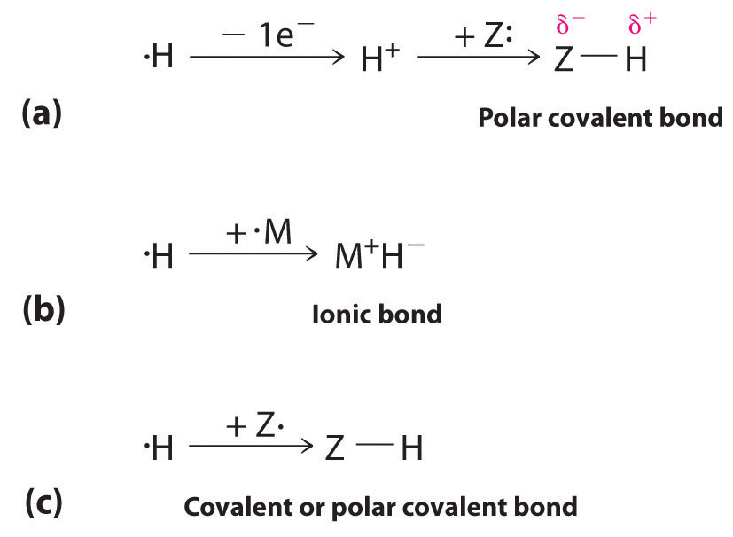
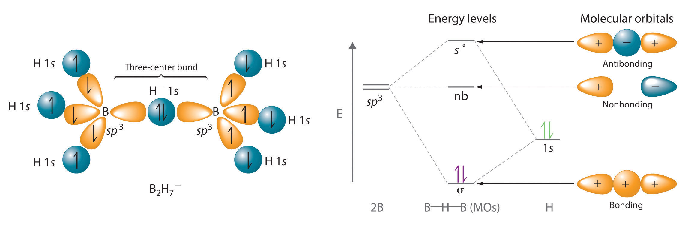
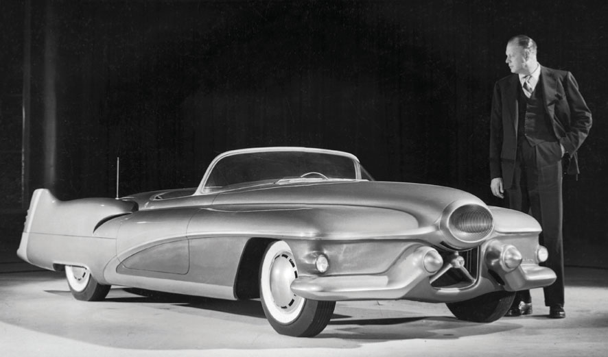

In previous chapters, we used the principles of chemical bonding, thermodynamics, and kinetics to provide a conceptual framework for understanding the chemistry of the elements. Beginning in Chapter 21 "Periodic Trends and the ", we use the periodic table to guide our discussion of the properties and reactions of the elements and the synthesis and uses of some of their commercially important compounds. We begin this chapter with a review of periodic trends as an introduction, and then we describe the chemistry of hydrogen and the other s-block elements. In Chapter 22 "The ", we consider the chemistry of the p-block elements; Chapter 23 "The " presents the transition metals, in which the d-subshell is being filled. In this chapter, you will learn why potassium chloride is used as a substitute for sodium chloride in a low-sodium diet, why cesium is used as a photosensor, why the heating elements in electric ranges are coated with magnesium oxide, and why exposure to a radioactive isotope of strontium is more dangerous for children than for adults.
Flame tests. Heating a compound in a very hot flame results in the formation of its component atoms in electronically excited states. When an excited atom decays to the ground state, it emits light (Chapter 6 "The Structure of Atoms"). Each element emits light at characteristic frequencies. Flame tests are used to identify many elements based on the color of light emitted in the visible region of the electromagnetic spectrum. As shown here, sodium compounds produce an intense yellow light, whereas potassium compounds produce a crimson color.
As we begin our summary of periodic trends, recall from Chapter 7 "The Periodic Table and Periodic Trends" that the single most important unifying principle in understanding the chemistry of the elements is the systematic increase in atomic number, accompanied by the orderly filling of atomic orbitals by electrons, which leads to periodicity in such properties as atomic and ionic size, ionization energy, electronegativity, and electron affinity. The same factors also lead to periodicity in valence electron configurations, which for each group results in similarities in oxidation states and the formation of compounds with common stoichiometries.
The most important periodic trends in atomic properties are summarized in Figure 21.1 "Summary of Periodic Trends in Atomic Properties". Recall from Chapter 7 "The Periodic Table and Periodic Trends" that these trends are based on periodic variations in a single fundamental property, the effective nuclear chargeThe nuclear charge an electron actually experiences because of shielding from other electrons closer to the nucleus. (Zeff), which increases from left to right and from top to bottom in the periodic table (Figure 6.29 "Orbital Energy Level Diagram for a Typical Multielectron Atom").
The diagonal line in Figure 21.1 "Summary of Periodic Trends in Atomic Properties" separates the metals (to the left of the line) from the nonmetals (to the right of the line). Because metals have relatively low electronegativities, they tend to lose electrons in chemical reactions to elements that have relatively high electronegativities, forming compounds in which they have positive oxidation states. Conversely, nonmetals have high electronegativities, and they therefore tend to gain electrons in chemical reactions to form compounds in which they have negative oxidation states. The semimetals lie along the diagonal line dividing metals and nonmetals. It is not surprising that they tend to exhibit properties and reactivities intermediate between those of metals and nonmetals. Because the elements of groups 13, 14, and 15 span the diagonal line separating metals and nonmetals, their chemistry is more complex than predicted based solely on their valence electron configurations.
Figure 21.1 Summary of Periodic Trends in Atomic Properties

Ionization energies, the magnitude of electron affinities, and electronegativities generally increase from left to right and from bottom to top. In contrast, atomic size decreases from left to right and from bottom to top. Consequently, the elements in the upper right of the periodic table are the smallest and most electronegative; the elements in the bottom left are the largest and least electronegative. The semimetals lie along the diagonal line separating the metals from the nonmetals and exhibit intermediate properties.
The chemistry of the second-period element of each group (n = 2: Li, Be, B, C, N, O, and F) differs in many important respects from that of the heavier members, or congeners, of the group. Consequently, the elements of the third period (n = 3: Na, Mg, Al, Si, P, S, and Cl) are generally more representative of the group to which they belong. The anomalous chemistry of second-period elements results from three important characteristics: small radii, energetically unavailable d orbitals, and a tendency to form pi (π) bonds with other atoms.
In contrast to the chemistry of the second-period elements, the chemistry of the third-period elements is more representative of the chemistry of the respective group.
Due to their small radii, second-period elements have electron affinities that are less negative than would be predicted from general periodic trends. When an electron is added to such a small atom, increased electron–electron repulsions tend to destabilize the anion. Moreover, the small sizes of these elements prevent them from forming compounds in which they have more than four nearest neighbors. Thus BF3 forms only the four-coordinate, tetrahedral BF4− ion, whereas under the same conditions AlF3 forms the six-coordinate, octahedral AlF63− ion. Because of the smaller atomic size, simple binary ionic compounds of second-period elements also have more covalent character than the corresponding compounds formed from their heavier congeners. The very small cations derived from second-period elements have a high charge-to-radius ratio and can therefore polarize the filled valence shell of an anion. As such, the bonding in such compounds has a significant covalent component, giving the compounds properties that can differ significantly from those expected for simple ionic compounds. As an example, LiCl, which is partially covalent in character, is much more soluble than NaCl in solvents with a relatively low dielectric constant, such as ethanol (ε = 25.3 versus 80.1 for H2O).
Because d orbitals are never occupied for principal quantum numbers less than 3, the valence electrons of second-period elements occupy 2s and 2p orbitals only. The energy of the 3d orbitals far exceeds the energy of the 2s and 2p orbitals, so using them in bonding is energetically prohibitive. Consequently, electron configurations with more than four electron pairs around a central, second-period element are simply not observed.You may recall from Chapter 8 "Ionic versus Covalent Bonding" that the role of d orbitals in bonding in main group compounds with coordination numbers of 5 or higher remains somewhat controversial. In fact, theoretical descriptions of the bonding in molecules such as SF6 have been published without mentioning the participation of d orbitals on sulfur. Arguments based on d-orbital availability and on the small size of the central atom, however, predict that coordination numbers greater than 4 are unusual for the elements of the second period, which is in agreement with experimental results.
One of the most dramatic differences between the lightest main group elements and their heavier congeners is the tendency of the second-period elements to form species that contain multiple bonds. For example, N is just above P in group 15: N2 contains an N≡N bond, but each phosphorus atom in tetrahedral P4 forms three P–P bonds. This difference in behavior reflects the fact that within the same group of the periodic table, the relative energies of the π bond and the sigma (σ) bond differ. A C=C bond, for example, is approximately 80% stronger than a C–C bond. In contrast, an Si=Si bond, with less p-orbital overlap between the valence orbitals of the bonded atoms because of the larger atomic size, is only about 40% stronger than an Si–Si bond. Consequently, compounds that contain both multiple and single C to C bonds are common for carbon, but compounds that contain only sigma Si–Si bonds are more energetically favorable for silicon and the other third-period elements.
Another important trend to note in main group chemistry is the chemical similarity between the lightest element of one group and the element immediately below and to the right of it in the next group, a phenomenon known as the diagonal effect (Figure 21.2 "The Diagonal Effect") There are, for example, significant similarities between the chemistry of Li and Mg, Be and Al, and B and Si. Both BeCl2 and AlCl3 have substantial covalent character, so they are somewhat soluble in nonpolar organic solvents. In contrast, although Mg and Be are in the same group, MgCl2 behaves like a typical ionic halide due to the lower electronegativity and larger size of magnesium.
Figure 21.2 The Diagonal Effect

The properties of the lightest element in a group are often more similar to those of the element below and to the right in the periodic table. For instance, the chemistry of lithium is more similar to that of magnesium in group 2 than it is to the chemistry of sodium, the next member in group 1.
The inert-pair effectThe empirical observation that the heavier elements of groups 13–17 often have oxidation states that are lower by 2 than the maximum predicted for their group. refers to the empirical observation that the heavier elements of groups 13–17 often have oxidation states that are lower by 2 than the maximum predicted for their group. For example, although an oxidation state of +3 is common for group 13 elements, the heaviest element in group 13, thallium (Tl), is more likely to form compounds in which it has a +1 oxidation state. There appear to be two major reasons for the inert-pair effect: increasing ionization energies and decreasing bond strengths.
In moving down a group in the p-block, increasing ionization energies and decreasing bond strengths result in an inert-pair effect.
The ionization energies increase because filled (n − 1)d or (n − 2)f subshells are relatively poor at shielding electrons in ns orbitals. Thus the two electrons in the ns subshell experience an unusually high effective nuclear charge, so they are strongly attracted to the nucleus, reducing their participation in bonding. It is therefore substantially more difficult than expected to remove these ns2 electrons, as shown in Table 21.1 "Ionization Energies (" by the difference between the first ionization energies of thallium and aluminum. Because Tl is less likely than Al to lose its two ns2 electrons, its most common oxidation state is +1 rather than +3.
Table 21.1 Ionization Energies (I) and Average M–Cl Bond Energies for the Group 13 Elements
| Element | Electron Configuration | I1 (kJ/mol) | I1 + I2 + I3 (kJ/mol) | Average M–Cl Bond Energy (kJ/mol) |
|---|---|---|---|---|
| B | [He] 2s22p1 | 801 | 6828 | 536 |
| Al | [Ne] 3s23p1 | 578 | 5139 | 494 |
| Ga | [Ar] 3d104s24p1 | 579 | 5521 | 481 |
| In | [Kr] 4d105s2p1 | 558 | 5083 | 439 |
| Tl | [Xe] 4f145d106s2p1 | 589 | 5439 | 373 |
Source of data: John A. Dean, Lange’s Handbook of Chemistry, 15th ed. (New York: McGraw-Hill, 1999).
Going down a group, the atoms generally became larger, and the overlap between the valence orbitals of the bonded atoms decreases. Consequently, bond strengths tend to decrease down a column. As shown by the M–Cl bond energies listed in Table 21.1 "Ionization Energies (", the strength of the bond between a group 13 atom and a chlorine atom decreases by more than 30% from B to Tl. Similar decreases are observed for the atoms of groups 14 and 15.
The net effect of these two factors—increasing ionization energies and decreasing bond strengths—is that in going down a group in the p-block, the additional energy released by forming two additional bonds eventually is not great enough to compensate for the additional energy required to remove the two ns2 electrons.
Based on the positions of the group 13 elements in the periodic table and the general trends outlined in this section,
Given: positions of elements in the periodic table
Asked for: classification, oxidation-state stability, and chemical reactivity
Strategy:
From the position of the diagonal line in the periodic table separating metals and nonmetals, classify the group 13 elements. Then use the trends discussed in this section to compare their relative stabilities and chemical reactivities.
Solution:
Exercise
Based on the positions of the group 14 elements C, Si, Ge, Sn, and Pb in the periodic table and the general trends outlined in this section,
Answer:
The most important unifying principle in describing the chemistry of the elements is that the systematic increase in atomic number and the orderly filling of atomic orbitals lead to periodic trends in atomic properties. The most fundamental property leading to periodic variations is the effective nuclear charge (Zeff). Because of the position of the diagonal line separating metals and nonmetals in the periodic table, the chemistry of groups 13, 14, and 15 is relatively complex. The second-period elements (n = 2) in each group exhibit unique chemistry compared with their heavier congeners because of their smaller radii, energetically unavailable d orbitals, and greater ability to form π bonds with other atoms. Increasing ionization energies and decreasing bond strengths lead to the inert-pair effect, which causes the heaviest elements of groups 13–17 to have a stable oxidation state that is lower by 2 than the maximum predicted for their respective groups.
List three physical properties that are important in describing the behavior of the main group elements.
Arrange K, Cs, Sr, Ca, Ba, and Li in order of
Arrange Rb, H, Be, Na, Cs, and Ca in order of
Which periodic trends are affected by Zeff? Based on the positions of the elements in the periodic table, which element would you expect to have the highest Zeff? the lowest Zeff?
Compare the properties of the metals and nonmetals with regard to their electronegativities and preferred oxidation states.
Of Ca, Br, Li, N, Zr, Ar, Sr, and S, which elements have a greater tendency to form positive ions than negative ions?
Arrange As, O, Ca, Sn, Be, and Sb in order of decreasing metallic character.
Give three reasons the chemistry of the second-period elements is generally not representative of their groups as a whole.
Compare the second-period elements and their heavier congeners with regard to
The heavier main group elements tend to form extended sigma-bonded structures rather than multiple bonds to other atoms. Give a reasonable explanation for this tendency.
What is the diagonal effect? How does it explain the similarity in chemistry between, for example, boron and silicon?
Although many of the properties of the second- and third-period elements in a group are quite different, one property is similar. Which one?
Two elements are effective additives to solid rocket propellant: beryllium and one other element that has similar chemistry. Based on the position of beryllium in the periodic table, identify the second element.
Give two reasons for the inert-pair effect. How would this phenomenon explain why Sn2+ is a better reducing agent than Pb2+?
Explain the following trend in electron affinities: Al (−41.8 kJ/mol), Si (−134.1 kJ/mol), P (−72.0 kJ/mol), and S (−200.4 kJ/mol).
Using orbital energy arguments, explain why electron configurations with more than four electron pairs around the central atom are not observed for second-period elements.
Ca > Be > Sn > Sb > As > O
aluminum
The magnitude of electron affinity increases from left to right in a period due to the increase in Zeff; P has a lower electron affinity than expected due to its half-filled 3p shell, which requires the added electron to enter an already occupied 3p orbital.
The following table lists the valences, coordination numbers, and ionic radii for a series of cations. Which would you substitute for K+ in a crystalline lattice? Explain your answer.
| Metal | Charge | Coordination Number | Ionic Radius (pm) |
|---|---|---|---|
| Li | +1 | 4 | 76 |
| Na | +1 | 6 | 102 |
| K | +1 | 6 | 138 |
| Mg | +2 | 6 | 72 |
| Ca | +2 | 6 | 100 |
| Sr | +2 | 6 | 118 |
Sr2+; it is the ion with the radius closest to that of K+.
We now turn from an overview of periodic trends to a discussion of the s-block elements, first by focusing on hydrogen, whose chemistry is sufficiently distinct and important to be discussed in a category of its own. Most versions of the periodic table place hydrogen in the upper left corner immediately above lithium, implying that hydrogen, with a 1s1 electron configuration, is a member of group 1. In fact, the chemistry of hydrogen does not greatly resemble that of the metals of group 1. Indeed, some versions of the periodic table place hydrogen above fluorine in group 17 because the addition of a single electron to a hydrogen atom completes its valence shell.
Although hydrogen has an ns1 electron configuration, its chemistry does not resemble that of the metals of group 1.
Hydrogen, the most abundant element in the universe, is the ultimate source of all other elements by the process of nuclear fusion. (For more information on nuclear fusion, see Chapter 20 "Nuclear Chemistry".) Table 21.2 "The Isotopes of Hydrogen" compares the three isotopes of hydrogen, all of which contain one proton and one electron per atom. The most common isotope is protiumThe most common isotope of hydrogen, consisting of one proton and one electron. (1H or H), followed by deuteriumAn isotope of hydrogen that consists of one proton, one neutron, and one electron. (2H or D), which has an additional neutron. The rarest isotope of hydrogen is tritiumA rare isotope of hydrogen that consists of one proton, two neutrons, and one electron. (3H or T), which is produced in the upper atmosphere by a nuclear reaction when cosmic rays strike nitrogen and other atoms; it is then washed into the oceans by rainfall. Tritium is radioactive, decaying to 3He with a half-life of only 12.32 years. Consequently, the atmosphere and oceans contain only a very low, steady-state level of tritium. The term hydrogen and the symbol H normally refer to the naturally occurring mixture of the three isotopes.
Table 21.2 The Isotopes of Hydrogen
| Protium | Deuterium | Tritium | |
|---|---|---|---|
| symbol | |||
| neutrons | 0 | 1 | 2 |
| mass (amu) | 1.00783 | 2.0140 | 3.01605 |
| abundance (%) | 99.9885 | 0.0115 | ∼10−17 |
| half-life (years) | — | — | 12.32 |
| boiling point of X2 (K) | 20.28 | 23.67 | 25 |
| melting point/boiling point of X2O (°C) | 0.0/100.0 | 3.8/101.4 | 4.5/? |
The different masses of the three isotopes of hydrogen cause them to have different physical properties. Thus H2, D2, and T2 differ in their melting points, boiling points, densities, and heats of fusion and vaporization. In 1931, Harold Urey and coworkers discovered deuterium by slowly evaporating several liters of liquid hydrogen until a volume of about 1 mL remained. When that remaining liquid was vaporized and its emission spectrum examined, they observed new absorption lines in addition to those previously identified as originating from hydrogen. The natural abundance of tritium, in contrast, is so low that it could not be detected by similar experiments; it was first prepared in 1934 by a nuclear reaction.
Urey won the Nobel Prize in Chemistry in 1934 for his discovery of deuterium (2H). Urey was born and educated in rural Indiana. After earning a BS in zoology from the University of Montana in 1917, Urey changed career directions. He earned his PhD in chemistry at Berkeley with G. N. Lewis (of Lewis electron structure fame) and subsequently worked with Niels Bohr in Copenhagen. During World War II, Urey was the director of war research for the Atom Bomb Project at Columbia University. In later years, his research focused on the evolution of life. In 1953, he and his graduate student, Stanley Miller, showed that organic compounds, including amino acids, could be formed by passing an electric discharge through a mixture of compounds thought to be present in the atmosphere of primitive Earth.
Because the normal boiling point of D2O is 101.4°C (compared to 100.0°C for H2O), evaporation or fractional distillation can be used to increase the concentration of deuterium in a sample of water by the selective removal of the more volatile H2O. Thus bodies of water that have no outlet, such as the Great Salt Lake and the Dead Sea, which maintain their level solely by evaporation, have significantly higher concentrations of deuterated water than does lake or seawater with at least one outlet. A more efficient way to obtain water highly enriched in deuterium is by prolonged electrolysis of an aqueous solution. Because a deuteron (D+) has twice the mass of a proton (H+), it diffuses more slowly toward the electrode surface. Consequently, the gas evolved at the cathode is enriched in H, the species that diffuses more rapidly, favoring the formation of H2 over D2 or HD. Meanwhile, the solution becomes enriched in deuterium. Deuterium-rich water is called heavy water because the density of D2O (1.1044 g/cm3 at 25°C) is greater than that of H2O (0.99978 g/cm3). Heavy water was an important constituent of early nuclear reactors. (For more information on nuclear reactors, see Chapter 20 "Nuclear Chemistry".)
Because deuterons diffuse so much more slowly, D2O will not support life and is actually toxic if administered to mammals in large amounts. The rate-limiting step in many important reactions catalyzed by enzymes involves proton transfer. The transfer of D+ is so slow compared with that of H+ because bonds to D break more slowly than those to H, so the delicate balance of reactions in the cell is disrupted. Nonetheless, deuterium and tritium are important research tools for biochemists. By incorporating these isotopes into specific positions in selected molecules, where they act as labels, or tracers, biochemists can follow the path of a molecule through an organism or a cell. Tracers can also be used to provide information about the mechanism of enzymatic reactions.
The 1s1 electron configuration of hydrogen indicates a single valence electron. Because the 1s orbital has a maximum capacity of two electrons, hydrogen can form compounds with other elements in three ways (Figure 21.3 "Three Types of Bonding in Compounds of Hydrogen"):
Figure 21.3 Three Types of Bonding in Compounds of Hydrogen
Because of its 1s1 electron configuration and the fact that the 1s orbital can accommodate no more than two electrons, hydrogen can (a) bond to other elements by losing an electron to form a proton, which can accept a pair of electrons from a more electronegative atom to form a polar covalent bond; (b) gain an electron from an electropositive metal to form a hydride ion, resulting in an ionic hydride; or (c) share its half-filled 1s orbital with a half-filled orbital on another atom to form a covalent or a polar covalent electron-pair bond.
Hydrogen can also act as a bridge between two atoms. One familiar example is the hydrogen bondAn unusually strong dipole-dipole interaction (intermolecular force) that results when H is bonded to very electronegative elements such as O, N, and F., an electrostatic interaction between a hydrogen bonded to an electronegative atom and an atom that has one or more lone pairs of electrons (Figure 21.4 "The Hydrogen Bond"). An example of this kind of interaction is the hydrogen bonding network found in water (Figure 11.8 "The Hydrogen-Bonded Structure of Ice"). Hydrogen can also form a three-center bond (or electron-deficient bond)A bond in which a hydride ion bridges two electropositive atoms., in which a hydride bridges two electropositive atoms. Compounds that contain hydrogen bonded to boron and similar elements often have this type of bonding. The B–H–B units found in boron hydrides cannot be described in terms of localized electron-pair bonds. Because the H atom in the middle of such a unit can accommodate a maximum of only two electrons in its 1s orbital, the B–H–B unit can be described as containing a hydride that interacts simultaneously with empty sp3 orbitals on two boron atoms (Figure 21.5 "A Three-Center Bond Uses Two Electrons to Link Three Atoms"). In these bonds, only two bonding electrons are used to hold three atoms together, making them electron-deficient bonds. You encountered a similar phenomenon in the discussion of π bonding in ozone and the nitrite ion in Chapter 9 "Molecular Geometry and Covalent Bonding Models", Section 9.4 "Polyatomic Systems with Multiple Bonds". Recall that in both these cases, we used the presence of two electrons in a π molecular orbital extending over three atoms to explain the fact that the two O–O bond distances in ozone and the two N–O bond distances in nitrite are the same, which otherwise can be explained only by the use of resonance structures.
Figure 21.4 The Hydrogen Bond
The covalent bond between hydrogen and a very electronegative element, such as nitrogen, oxygen, or fluorine, is highly polar. The resulting partial positive charge on H allows it to interact with a lone pair of electrons on another atom to form a hydrogen bond, which is typically a linear arrangement of the three atoms, with the hydrogen atom placed asymmetrically between the two heavier atoms.
Figure 21.5 A Three-Center Bond Uses Two Electrons to Link Three Atoms
In the B–H–B unit shown, a hydride, with a filled 1s orbital, interacts simultaneously with empty sp3 hybrids on the boron atoms of two BH3 units to give three molecular orbitals. The two bonding electrons occupy the lowest-energy (σ) bonding orbital, thereby holding all three atoms together.
Hydrogen can lose its electron to form H+, accept an electron to form H−, share its electron, hydrogen bond, or form a three-center bond.
The first known preparation of elemental hydrogen was in 1671, when Robert Boyle dissolved iron in dilute acid and obtained a colorless, odorless, gaseous product. Hydrogen was finally identified as an element in 1766, when Henry Cavendish showed that water was the sole product of the reaction of the gas with oxygen. The explosive properties of mixtures of hydrogen with air were not discovered until early in the 18th century; they partially caused the spectacular explosion of the hydrogen-filled dirigible Hindenburg in 1937 (Figure 21.6 "The Explosive Properties of Hydrogen"). Due to its extremely low molecular mass, hydrogen gas is difficult to condense to a liquid (boiling point = 20.3 K), and solid hydrogen has one of the lowest melting points known (13.8 K).
Figure 21.6 The Explosive Properties of Hydrogen
When mixed with air and ignited by a spark, hydrogen gas can explode. The photograph shows the German dirigible Hindenburg on fire at Lakehurst, New Jersey, in 1937, after its hydrogen compartment was accidentally ignited as a consequence of an electrical discharge that caused the dirigible’s flammable skin to catch fire.
The most common way to produce small amounts of highly pure hydrogen gas in the laboratory was discovered by Boyle: reacting an active metal (M), such as iron, magnesium, or zinc, with dilute acid:
Equation 21.1
M(s) + 2H+(aq) → H2(g) + M2+(aq)Hydrogen gas can also be generated by reacting metals such as aluminum or zinc with a strong base:
Equation 21.2
Solid commercial drain cleaners such as Drano use this reaction to generate gas bubbles that help break up clogs in a drainpipe. (For more information on redox reactions like that of Drano, see Chapter 19 "Electrochemistry", Section 19.2 "Standard Potentials".) Hydrogen gas is also produced by reacting ionic hydrides with water. Because ionic hydrides are expensive, however, this reaction is generally used for only specialized purposes, such as producing HD gas by reacting a hydride with D2O:
Equation 21.3
MH(s) + D2O(l) → HD(g) + M+(aq) + OD−(aq)On an industrial scale, H2 is produced from methane by means of catalytic steam reforming, a method used to convert hydrocarbons to a mixture of CO and H2 known as synthesis gas, or syngas. (For more information on steam reforming, see Chapter 14 "Chemical Kinetics", Section 14.8 "Catalysis".) The process is carried out at elevated temperatures (800°C) in the presence of a nickel catalyst:
Equation 21.4
Most of the elements in the periodic table form binary compounds with hydrogen, which are collectively referred to as hydrides. Binary hydrides in turn can be classified in one of three ways, each with its own characteristic properties. Covalent hydrides contain hydrogen bonded to another atom via a covalent bond or a polar covalent bond. Covalent hydrides are usually molecular substances that are relatively volatile and have low melting points. Ionic hydrides contain the hydride ion as the anion with cations derived from electropositive metals. Like most ionic compounds, they are typically nonvolatile solids that contain three-dimensional lattices of cations and anions. Unlike most ionic compounds, however, they often decompose to H2(g) and the parent metal after heating. Metallic hydrides are formed by hydrogen and less electropositive metals such as the transition metals. The properties of metallic hydrides are usually similar to those of the parent metal. Consequently, metallic hydrides are best viewed as metals that contain many hydrogen atoms present as interstitial impurities.
Covalent hydrides are relatively volatile and have low melting points; ionic hydrides are generally nonvolatile solids in a lattice framework.
The three isotopes of hydrogen—protium (1H or H), deuterium (2H or D), and tritium (3H or T)—have different physical properties. Deuterium and tritium can be used as tracers, substances that enable biochemists to follow the path of a molecule through an organism or a cell. Hydrogen can form compounds that contain a proton (H+), a hydride ion (H−), an electron-pair bond to H, a hydrogen bond, or a three-center bond (or electron-deficient bond), in which two electrons are shared between three atoms. Hydrogen gas can be generated by reacting an active metal with dilute acid, reacting Al or Zn with a strong base, or industrially by catalytic steam reforming, which produces synthesis gas, or syngas.
Some periodic tables include hydrogen as a group 1 element, whereas other periodic tables include it as a group 17 element. Refer to the properties of hydrogen to propose an explanation for its placement in each group. In each case, give one property of hydrogen that would exclude it from groups 1 and 17.
If there were a planet where the abundances of D2O and H2O were reversed and life had evolved to adjust to this difference, what would be the effects of consuming large amounts of H2O?
Describe the bonding in a hydrogen bond and the central B–H bond in B2H7−. Why are compounds containing isolated protons unknown?
With which elements does hydrogen form ionic hydrides? covalent hydrides? metallic hydrides? Which of these types of hydrides can behave like acids?
Indicate which elements are likely to form ionic, covalent, or metallic hydrides and explain your reasoning:
Which has the higher ionization energy—H or H−? Why?
The electronegativities of hydrogen, fluorine, and iodine are 2.20, 3.98, and 2.66, respectively. Why, then, is HI a stronger acid than HF?
If H2O were a linear molecule, would the density of ice be less than or greater than that of liquid water? Explain your answer.
In addition to ion–dipole attractions, hydrogen bonding is important in solid crystalline hydrates, such as Na4XeO6·8H2O. Based on this statement, explain why anhydrous Na4XeO6 does not exist.
H has one electron in an s orbital, like the group 1 metals, but it is also one electron short of a filled principal shell, like the group 17 elements. Unlike the alkali metals, hydrogen is not a metal. Unlike the halogens, elemental hydrogen is not a potent oxidant.
Hydrogen bonding with waters of hydration will partially neutralize the negative charge on the terminal oxygen atoms on the XeO64− ion, which stabilizes the solid.
One of the largest uses of methane is to produce syngas, which is a source of hydrogen for converting nitrogen to ammonia. Write a complete equation for formation of syngas from methane and carbon dioxide. Calculate ΔG° for this reaction at 298 K and determine the temperature at which the reaction becomes spontaneous.
An alternative method of producing hydrogen is the water–gas shift reaction:
CO(g) + H2O(g) → CO2(g) + H2(g)Use Chapter 25 "Appendix A: Standard Thermodynamic Quantities for Chemical Substances at 25°C" to calculate ΔG° for this reaction at 298 K and determine the temperature at which the reaction changes from spontaneous to nonspontaneous (or vice versa).
Predict the products of each reaction at 25°C and then balance each chemical equation.
Using heavy water (D2O) as the source of deuterium, how could you conveniently prepare
What are the products of reacting NaH with D2O? Do you expect the same products from reacting NaD and H2O? Explain your answer.
A 2.50 g sample of zinc metal reacts with 100.0 mL of 0.150 M HCl. What volume of H2 (in liters) is produced at 23°C and 729 mmHg?
A chemical reaction requires 16.8 L of H2 gas at standard temperature and pressure. How many grams of magnesium metal are needed to produce this amount of hydrogen gas?
Seawater contains 3.5% dissolved salts by mass and has an average density of 1.026 g/mL. The volume of the ocean is estimated to be 1.35 × 1021 L. Using the data in Table 21.2 "The Isotopes of Hydrogen", calculate the total mass of deuterium in the ocean.
From the data in Table 21.2 "The Isotopes of Hydrogen", determine the molarity of DOH in water. Do you expect the molarity of D2O in water to be similar? Why or why not?
From the data in Table 21.2 "The Isotopes of Hydrogen", calculate how many liters of water you would have to evaporate to obtain 1.0 mL of TOD (tritium-oxygen-deuterium). The density of TOD is 1.159 g/mL.
The alkali metals are so reactive that they are never found in nature in elemental form. Although some of their ores are abundant, isolating them from their ores is somewhat difficult. For these reasons, the group 1 elements were unknown until the early 19th century, when Sir Humphry Davy first prepared sodium (Na) and potassium (K) by passing an electric current through molten alkalis. (The ashes produced by the combustion of wood are largely composed of potassium and sodium carbonate.) Lithium (Li) was discovered 10 years later when the Swedish chemist Johan Arfwedson was studying the composition of a new Brazilian mineral. Cesium (Cs) and rubidium (Rb) were not discovered until the 1860s, when Robert Bunsen conducted a systematic search for new elements. Known to chemistry students as the inventor of the Bunsen burner, Bunsen’s spectroscopic studies of ores showed sky blue and deep red emission lines that he attributed to two new elements, Cs and Rb, respectively. Francium (Fr) is found in only trace amounts in nature, so our knowledge of its chemistry is limited. All the isotopes of Fr have very short half-lives, in contrast to the other elements in group 1.
Davy was born in Penzance, Cornwall, England. He was a bit of a wild man in the laboratory, often smelling and tasting the products of his experiments, which almost certainly shortened his life. He discovered the physiological effects that cause nitrous oxide to be called “laughing gas” (and became addicted to it!), and he almost lost his eyesight in an explosion of nitrogen trichloride (NCl3), which he was the first to prepare. Davy was one of the first to recognize the utility of Alessandro Volta’s “electric piles” (batteries). By connecting several “piles” in series and inserting electrodes into molten salts of the alkali metals and alkaline earth metals, he was able to isolate six previously unknown elements as pure metals: sodium, potassium, calcium, strontium, barium, and magnesium. He also discovered boron and was the first to prepare phosphine (PH3) and hydrogen telluride (H2Te), both of which are highly toxic.
Bunsen was born and educated in Göttingen, Germany. His early work dealt with organic arsenic compounds, whose highly toxic nature and explosive tendencies almost killed him and did cost him an eye. He designed the Bunsen burner, a reliable gas burner, and used it and emission spectra to discover cesium (named for its blue line) and rubidium (named for its red line).
Because the alkali metals are among the most potent reductants known, obtaining them in pure form requires a considerable input of energy. Pure lithium and sodium for example, are typically prepared by the electrolytic reduction of molten chlorides:
Equation 21.5
In practice, CaCl2 is mixed with LiCl to lower the melting point of the lithium salt. The electrolysis is carried out in an argon atmosphere rather than the nitrogen atmosphere typically used for substances that are highly reactive with O2 and water because Li reacts with nitrogen gas to form lithium nitride (Li3N). Metallic sodium is produced by the electrolysis of a molten mixture of NaCl and CaCl2. In contrast, potassium is produced commercially from the reduction of KCl by Na, followed by the fractional distillation of K(g). Although rubidium and cesium can also be produced by electrolysis, they are usually obtained by reacting their hydroxide salts with a reductant such as Mg:
Equation 21.6
2RbOH(s) + Mg(s) → 2Rb(l) + Mg(OH)2(s)Massive deposits of essentially pure NaCl and KCl are found in nature and are the major sources of sodium and potassium. The other alkali metals are found in low concentrations in a wide variety of minerals, but ores that contain high concentrations of these elements are relatively rare. No concentrated sources of rubidium are known, for example, even though it is the 16th most abundant element on Earth. Rubidium is obtained commercially by isolating the 2%–4% of Rb present as an impurity in micas, minerals that are composed of sheets of complex hydrated potassium–aluminum silicates.
Alkali metals are recovered from silicate ores in a multistep process that takes advantage of the pH-dependent solubility of selected salts of each metal ion. The steps in this process are leaching, which uses sulfuric acid to dissolve the desired alkali metal ion and Al3+ from the ore; basic precipitation to remove Al3+ from the mixture as Al(OH)3; selective precipitation of the insoluble alkali metal carbonate; dissolution of the salt again in hydrochloric acid; and isolation of the metal by evaporation and electrolysis. Figure 21.7 "Isolating Lithium from Spodumene, a Lithium Silicate Ore" illustrates the isolation of liquid lithium from a lithium silicate ore by this process.
Figure 21.7 Isolating Lithium from Spodumene, a Lithium Silicate Ore

The key steps are acid leaching, basic precipitation of aluminum hydroxide, selective precipitation of insoluble lithium carbonate, conversion to lithium chloride, evaporation, and electrolysis. The other alkali metals and the alkaline earth metals are recovered from their ores by similar processes.
Various properties of the group 1 elements are summarized in Table 21.3 "Selected Properties of the Group 1 Elements". In keeping with overall periodic trends, the atomic and ionic radii increase smoothly from Li to Cs, and the first ionization energies decrease as the atoms become larger. As a result of their low first ionization energies, the alkali metals have an overwhelming tendency to form ionic compounds where they have a +1 charge. All the alkali metals have relatively high electron affinities because the addition of an electron produces an anion (M−) with an ns2 electron configuration. The densities of the elements generally increase from Li to Cs, reflecting another common trend: because the atomic masses of the elements increase more rapidly than the atomic volumes as you go down a group, the densest elements are near the bottom of the periodic table. An unusual trend in the group 1 elements is the smooth decrease in the melting and boiling points from Li to Cs. As a result, Cs (melting point = 28.5°C) is one of only three metals (the others are Ga and Hg) that are liquids at body temperature (37°C).
Table 21.3 Selected Properties of the Group 1 Elements
| Lithium | Sodium | Potassium | Rubidium | Cesium | Francium | |
|---|---|---|---|---|---|---|
| atomic symbol | Li | Na | K | Rb | Cs | Fr |
| atomic number | 3 | 11 | 19 | 37 | 55 | 87 |
| atomic mass | 6.94 | 22.99 | 39.10 | 85.47 | 132.91 | 223 |
| valence electron configuration | 2s1 | 3s1 | 4s1 | 5s1 | 6s1 | 7s1 |
| melting point/boiling point (°C) | 180.5/1342 | 97.8/883 | 63.5/759 | 39.3/688 | 28.5/671 | 27/— |
| density (g/cm3) at 25°C | 0.534 | 0.97 | 0.89 | 1.53 | 1.93 | — |
| atomic radius (pm) | 167 | 190 | 243 | 265 | 298 | — |
| first ionization energy (kJ/mol) | 520 | 496 | 419 | 403 | 376 | 393 |
| most common oxidation state | +1 | +1 | +1 | +1 | +1 | +1 |
| ionic radius (pm)* | 76 | 102 | 138 | 152 | 167 | — |
| electron affinity (kJ/mol) | −60 | −53 | −48 | −47 | −46 | — |
| electronegativity | 1.0 | 0.9 | 0.8 | 0.8 | 0.8 | 0.7 |
| standard electrode potential (E°, V) | −3.04 | −2.71 | −2.93 | −2.98 | −3.03 | — |
| product of reaction with O2 | Li2O | Na2O2 | KO2 | RbO2 | CsO2 | — |
| type of oxide | basic | basic | basic | basic | basic | — |
| product of reaction with N2 | Li3N | none | none | none | none | — |
| product of reaction with X2 | LiX | NaX | KX | RbX | CsX | — |
| product of reaction with H2 | LiH | NaH | KH | RbH | CsH | — |
| *The values cited are for four-coordinate ions except for Rb+ and Cs+, whose values are given for the six-coordinate ion. | ||||||
The standard reduction potentials (E°) of the alkali metals do not follow the trend based on ionization energies. (For more information on reduction potentials, see Chapter 19 "Electrochemistry"). Unexpectedly, lithium is the strongest reductant, and sodium is the weakest (Table 21.3 "Selected Properties of the Group 1 Elements"). Because Li+ is much smaller than the other alkali metal cations, its hydration energy is the highest. The high hydration energy of Li+ more than compensates for its higher ionization energy, making lithium metal the strongest reductant in aqueous solution. This apparent anomaly is an example of how the physical or the chemical behaviors of the elements in a group are often determined by the subtle interplay of opposing periodic trends.
All alkali metals are electropositive elements with an ns1 valence electron configuration, forming the monocation (M+) by losing the single valence electron. Because removing a second electron would require breaking into the (n − 1) closed shell, which is energetically prohibitive, the chemistry of the alkali metals is largely that of ionic compounds that contain M+ ions. However, as we discuss later, the lighter group 1 elements also form a series of organometallic compounds that contain polar covalent M–C bonds.
All the alkali metals react vigorously with the halogens (group 17) to form the corresponding ionic halides, where X is a halogen:
Equation 21.7
2M(s) + X2(s, l, g) → 2M+X−(s)Similarly, the alkali metals react with the heavier chalcogens (sulfur, selenium, and tellurium in group 16) to produce metal chalcogenides, where Y is S, Se, or Te:
Equation 21.8
2M(s) + Y(s) → M2Y(s)When excess chalcogen is used, however, a variety of products can be obtained that contain chains of chalcogen atoms, such as the sodium polysulfides (Na2Sn, where n = 2–6). For example, Na2S3 contains the S32− ion, which is V shaped with an S–S–S angle of about 103°. The one-electron oxidation product of the trisulfide ion (S3−) is responsible for the intense blue color of the gemstones lapis lazuli and blue ultramarine (Figure 21.8 "The Trisulfide Anion Is Responsible for the Deep Blue Color of Some Gemstones").
Figure 21.8 The Trisulfide Anion Is Responsible for the Deep Blue Color of Some Gemstones

(a) The rich blue color of lapis lazuli is due to small amounts of the normally unstable S3− anion. (b) The aluminosilicate cages of the minerals (zeolites) that make up the matrix of blue ultramarine stabilize the reactive anion; excess Na+ ions in the structure balance the negative charges on the zeolite framework and the S3− anion.
Reacting the alkali metals with oxygen, the lightest element in group 16, is more complex, and the stoichiometry of the product depends on both the metal:oxygen ratio and the size of the metal atom. For instance, when alkali metals burn in air, the observed products are Li2O (white), Na2O2 (pale yellow), KO2 (orange), RbO2 (brown), and CsO2 (orange). Only Li2O has the stoichiometry expected for a substance that contains two M+ cations and one O2− ion. In contrast, Na2O2 contains the O22− (peroxide) anion plus two Na+ cations. The other three salts, with stoichiometry MO2, contain the M+ cation and the O2− (superoxide) ion. Because O2− is the smallest of the three oxygen anions, it forms a stable ionic lattice with the smallest alkali metal cation (Li+). In contrast, the larger alkali metals—potassium, rubidium, and cesium—react with oxygen in air to give the metal superoxides. Because the Na+ cation is intermediate in size, sodium reacts with oxygen to form a compound with an intermediate stoichiometry: sodium peroxide. Under specific reaction conditions, however, it is possible to prepare the oxide, peroxide, and superoxide salts of all five alkali metals, except for lithium superoxide (LiO2).

A crystal of spodumene (LiAlSi2O6). This mineral is one of the most important lithium ores.
The chemistry of the alkali metals is largely that of ionic compounds containing the M+ ions.
The alkali metal peroxides and superoxides are potent oxidants that react, often vigorously, with a wide variety of reducing agents, such as charcoal or aluminum metal. For example, Na2O2 is used industrially for bleaching paper, wood pulp, and fabrics such as linen and cotton. In submarines, Na2O2 and KO2 are used to purify and regenerate the air by removing the CO2 produced by respiration and replacing it with O2. Both compounds react with CO2 in a redox reaction in which O22− or O2− is simultaneously oxidized and reduced, producing the metal carbonate and O2:
Equation 21.9
2Na2O2(s) + 2CO2(g) → 2Na2CO3(s) + O2(g)Equation 21.10
4KO2(s) + 2CO2(g) → 2K2CO3(s) + 3O2(g)The presence of water vapor, the other product of respiration, makes KO2 even more effective at removing CO2 because potassium bicarbonate, rather than potassium carbonate, is formed:
Equation 21.11
4KO2(s) + 4CO2(g) + 2H2O(g) → 4KHCO3(s) + 3O2(g)Notice that 4 mol of CO2 are removed in this reaction, rather than 2 mol in Equation 21.10.
Lithium, the lightest alkali metal, is the only one that reacts with atmospheric nitrogen, forming lithium nitride (Li3N). Lattice energies again explain why the larger alkali metals such as potassium do not form nitrides: packing three large K+ cations around a single relatively small anion is energetically unfavorable. In contrast, all the alkali metals react with the larger group 15 elements phosphorus and arsenic to form metal phosphides and arsenides (where Z is P or As):
Equation 21.12
12M(s) + Z4(s) → 4M3Z(s)Because of lattice energies, only lithium forms a stable oxide and nitride.
The alkali metals react with all group 14 elements, but the compositions and properties of the products vary significantly. For example, reaction with the heavier group 14 elements gives materials that contain polyatomic anions and three-dimensional cage structures, such as K4Si4 whose structure is shown here. In contrast, lithium and sodium are oxidized by carbon to produce a compound with the stoichiometry M2C2 (where M is Li or Na):
Equation 21.13
2M(s) + 2C(s) → M2C2(s)
The three-dimensional cage structure of the Si44−ion in the ionic compound K4S4. The Si44− ion is isoelectronic and isostructural with the P4 molecule.
The same compounds can be obtained by reacting the metal with acetylene (C2H2). In this reaction, the metal is again oxidized, and hydrogen is reduced:
Equation 21.14
2M(s) + C2H2(g) → M2C2(s) + H2(g)The acetylide ion (C22−), formally derived from acetylene by the loss of both hydrogens as protons, is a very strong base. Reacting acetylide salts with water produces acetylene and MOH(aq).
The heavier alkali metals (K, Rb, and Cs) also react with carbon in the form of graphite. Instead of disrupting the hexagonal sheets of carbon atoms, however, the metals insert themselves between the sheets of carbon atoms to give new substances called graphite intercalation compoundsA compound that forms when heavier alkali metals react with carbon in the form of graphite and insert themselves between the sheets of carbon atoms. (part (a) in Figure 21.9 "Graphite Intercalation Compounds"). The stoichiometries of these compounds include MC60 and MC48, which are black/gray; MC36 and MC24, which are blue; and MC8, which is bronze (part (b) in Figure 21.9 "Graphite Intercalation Compounds"). The remarkably high electrical conductivity of these compounds (about 200 times greater than graphite) is attributed to a net transfer of the valence electron of the alkali metal to the graphite layers to produce, for example, K+C8−.
Figure 21.9 Graphite Intercalation Compounds

Reacting graphite with alkali metals such as K, Rb, and Cs results in partial reduction of the graphite and insertion of layers of alkali metal cations between sets of n layers of carbon atoms. (a) In KC8, layers of K+ ions are inserted between every pair of carbon layers, giving n = 1. (b) The stoichiometry and color of intercalation compounds depend on the number of layers of carbon atoms (n) between each layer of intercalated metal atoms. This schematic diagram illustrates the most common structures that have been observed.
All the alkali metals react directly with gaseous hydrogen at elevated temperatures to produce ionic hydrides (M+H−):
Equation 21.15
2M(s) + H2(g) → 2MH(s)All are also capable of reducing water to produce hydrogen gas:
Equation 21.16
Although lithium reacts rather slowly with water, sodium reacts quite vigorously (Figure 21.10 "Reacting Sodium with Water"), and the heavier alkali metals (K, Rb, and Cs) react so vigorously that they invariably explode. This trend, which is not consistent with the relative magnitudes of the reduction potentials of the elements, serves as another example of the complex interplay of different forces and phenomena—in this case, kinetics and thermodynamics. Although the driving force for the reaction is greatest for lithium, the heavier metals have lower melting points. The heat liberated by the reaction causes them to melt, and the larger surface area of the liquid metal in contact with water greatly accelerates the reaction rate.
Figure 21.10 Reacting Sodium with Water

Like most elements in groups 1 and 2, sodium reacts violently with water. The products are the Na+(aq) ion and hydrogen gas, which is potentially explosive when mixed with air.
Alkali metal cations are found in a wide variety of ionic compounds. In general, any alkali metal salt can be prepared by reacting the alkali metal hydroxide with an acid and then evaporating the water:
Equation 21.17
2MOH(aq) + H2SO4(aq) → M2SO4(aq) + 2H2O(l)Equation 21.18
MOH(aq) + HNO3(aq) → MNO3(aq) + H2O(l)Hydroxides of alkali metals also can react with organic compounds that contain an acidic hydrogen to produce a salt. An example is the preparation of sodium acetate (CH3CO2Na) by reacting sodium hydroxide and acetic acid:
Equation 21.19
CH3CO2H(aq) + NaOH(s) → CH3CO2Na(aq) + H2O(l)Soap is a mixture of the sodium and potassium salts of naturally occurring carboxylic acids, such as palmitic acid [CH3(CH2)14CO2H] and stearic acid [CH3(CH2)16CO2H]. Lithium salts, such as lithium stearate [CH3(CH2)14CO2Li], are used as additives in motor oils and greases.
Because of their low positive charge (+1) and relatively large ionic radii, alkali metal cations have only a weak tendency to react with simple Lewis bases to form metal complexes like those discussed in Chapter 17 "Solubility and Complexation Equilibriums". Complex formation is most significant for the smallest cation (Li+) and decreases with increasing radius. In aqueous solution, for example, Li+ forms the tetrahedral [Li(H2O)4]+ complex. In contrast, the larger alkali metal cations form octahedral [M(H2O)6]+ complexes. Complex formation is primarily due to the electrostatic interaction of the metal cation with polar water molecules. Because of their high affinity for water, anhydrous salts that contain Li+ and Na+ ions (such as Na2SO4) are often used as drying agents. These compounds absorb trace amounts of water from nonaqueous solutions to form hydrated salts, which are then easily removed from the solution by filtration.

The tetrahedral [Li(H2O)4]+and octahedral [Rb(H2O)6]+complexes. The Li+ ion is so small that it can accommodate only four water molecules around it, but the larger alkali metal cations tend to bind six water molecules.
Because of their low positive charge (+1) and relatively large ionic radii, alkali metal cations have only a weak tendency to form complexes with simple Lewis bases.
Electrostatic interactions also allow alkali metal ions to form complexes with certain cyclic polyethers and related compounds, such as crown ethers and cryptands. As discussed in Chapter 13 "Solutions", crown ethersA cyclic polyether that has four or more oxygen atoms separated by two or three carbon atoms. A central cavity can accommodate a metal ion coordinated to the ring of oxygen atoms. are cyclic polyethers that contain four or more oxygen atoms separated by two or three carbon atoms. All crown ethers have a central cavity that can accommodate a metal ion coordinated to the ring of oxygen atoms, and crown ethers with rings of different sizes prefer to bind metal ions that fit into the cavity. For example, 14-crown-4, with the smallest cavity that can accommodate a metal ion, has the highest affinity for Li+, whereas 18-crown-6 forms the strongest complexes with K+ (part (a) in Figure 13.7 "Crown Ethers and Cryptands").
CryptandsConsisting of three chains connected by two nitrogen atoms, this compound can completely encapsulate a metal ion of the appropriate size, coordinating to the metal by the lone pairs of electrons on each oxygen and the two nitrogen atoms. are more nearly spherical analogues of crown ethers and are even more powerful and selective complexing agents. Cryptands consist of three chains containing oxygen that are connected by two nitrogen atoms (part (b) in Figure 13.7 "Crown Ethers and Cryptands"). They can completely surround (encapsulate) a metal ion of the appropriate size, coordinating to the metal by a lone pair of electrons on each O atom and the two N atoms. Like crown ethers, cryptands with different cavity sizes are highly selective for metal ions of particular sizes. Crown ethers and cryptands are often used to dissolve simple inorganic salts such as KMnO4 in nonpolar organic solvents (Figure 13.8 "Effect of a Crown Ether on the Solubility of KMnO").
A remarkable feature of the alkali metals is their ability to dissolve reversibly in liquid ammonia. Just as in their reactions with water, reacting alkali metals with liquid ammonia eventually produces hydrogen gas and the metal salt of the conjugate base of the solvent—in this case, the amide ion (NH2−) rather than hydroxide:
Equation 21.20

Solvated electrons. The presence of solvated electrons (e−, NH3) in solutions of alkali metals in liquid ammonia is indicated by the intense color of the solution and its electrical conductivity.
where the (am) designation refers to an ammonia solution, analogous to (aq) used to indicate aqueous solutions. Without a catalyst, the reaction in Equation 21.20 tends to be rather slow. In many cases, the alkali metal amide salt (MNH2) is not very soluble in liquid ammonia and precipitates, but when dissolved, very concentrated solutions of the alkali metal are produced. One mole of Cs metal, for example, will dissolve in as little as 53 mL (40 g) of liquid ammonia. The pure metal is easily recovered when the ammonia evaporates.
Solutions of alkali metals in liquid ammonia are intensely colored and good conductors of electricity due to the presence of solvated electrons (e−, NH3), which are not attached to single atoms. A solvated electron is loosely associated with a cavity in the ammonia solvent that is stabilized by hydrogen bonds. Alkali metal–liquid ammonia solutions of about 3 M or less are deep blue (Figure 21.11 "Alkali Metal–Liquid Ammonia Solutions") and conduct electricity about 10 times better than an aqueous NaCl solution because of the high mobility of the solvated electrons. As the concentration of the metal increases above 3 M, the color changes to metallic bronze or gold, and the conductivity increases to a value comparable with that of the pure liquid metals.
Figure 21.11 Alkali Metal–Liquid Ammonia Solutions

Most metals are insoluble in virtually all solvents, but the alkali metals (and the heavier alkaline earth metals) dissolve readily in liquid ammonia to form solvated metal cations and solvated electrons, which give the solution a deep blue color.
In addition to solvated electrons, solutions of alkali metals in liquid ammonia contain the metal cation (M+), the neutral metal atom (M), metal dimers (M2), and the metal anion (M−). The anion is formed by adding an electron to the singly occupied ns valence orbital of the metal atom. Even in the absence of a catalyst, these solutions are not very stable and eventually decompose to the thermodynamically favored products: M+NH2− and hydrogen gas (Equation 21.20). Nonetheless, the solvated electron is a potent reductant that is often used in synthetic chemistry.
Compounds that contain a metal covalently bonded to a carbon atom of an organic species are called organometallic compoundsA compound that contains a metal covalently bonded to a carbon atom of an organic species.. The properties and reactivities of organometallic compounds differ greatly from those of either the metallic or organic components. Because of its small size, lithium, for example, forms an extensive series of covalent organolithium compounds, such as methyllithium (LiCH3), which are by far the most stable and best-known group 1 organometallic compounds. These volatile, low-melting-point solids or liquids can be sublimed or distilled at relatively low temperatures and are soluble in nonpolar solvents. Like organic compounds, the molten solids do not conduct electricity to any significant degree. Organolithium compounds have a tendency to form oligomers with the formula (RLi)n, where R represents the organic component. For example, in both the solid state and solution, methyllithium exists as a tetramer with the structure shown in Figure 21.12 "The Tetrameric Structure of Methyllithium", where each triangular face of the Li4 tetrahedron is bridged by the carbon atom of a methyl group. Effectively, the carbon atom of each CH3 group is using a single pair of electrons in an sp3 hybrid lobe to bridge three lithium atoms, making this an example of two-electron, four-center bonding. Clearly, such a structure, in which each carbon atom is apparently bonded to six other atoms, cannot be explained using any of the electron-pair bonding schemes discussed in Chapter 8 "Ionic versus Covalent Bonding" and Chapter 9 "Molecular Geometry and Covalent Bonding Models". Molecular orbital theory can explain the bonding in methyllithium, but the description is beyond the scope of this text.
Figure 21.12 The Tetrameric Structure of Methyllithium

Methyllithium is not an ionic compound; it exists as tetrameric (CH3Li)4 molecules. The structure consists of a tetrahedral arrangement of four lithium atoms, with the carbon atom of a methyl group located above the middle of each triangular face of the tetrahedron. The carbon atoms thus bridge three lithium atoms to form four-center, two-electron bonds.
The properties and reactivities of organometallic compounds differ greatly from those of either the metallic or organic components.
Organosodium and organopotassium compounds are more ionic than organolithium compounds. They contain discrete M+ and R− ions and are insoluble or only sparingly soluble in nonpolar solvents.
Because sodium remains liquid over a wide temperature range (97.8–883°C), it is used as a coolant in specialized high-temperature applications, such as nuclear reactors and the exhaust valves in high-performance sports car engines. Cesium, because of its low ionization energy, is used in photosensors in automatic doors, toilets, burglar alarms, and other electronic devices. In these devices, cesium is ionized by a beam of visible light, thereby producing a small electric current; blocking the light interrupts the electric current and triggers a response.
Compounds of sodium and potassium are produced on a huge scale in industry. Each year, the top 50 industrial compounds include NaOH, used in a wide variety of industrial processes; Na2CO3, used in the manufacture of glass; K2O, used in porcelain glazes; and Na4SiO4, used in detergents.
Several other alkali metal compounds are also important. For example, Li2CO3 is one of the most effective treatments available for manic depression or bipolar disorder. It appears to modulate or dampen the effect on the brain of changes in the level of neurotransmitters, which are biochemical substances responsible for transmitting nerve impulses between neurons. Consequently, patients who take “lithium” do not exhibit the extreme mood swings that characterize this disorder.
For each application, choose the more appropriate substance based on the properties and reactivities of the alkali metals and their compounds. Explain your choice in each case.
Given: application and selected alkali metals
Asked for: appropriate metal for each application
Strategy:
Use the properties and reactivities discussed in this section to determine which alkali metal is most suitable for the indicated application.
Solution:
Exercise
Indicate which of the alternative alkali metals or their compounds given is more appropriate for each application.
Answer:
Predict the products of each reaction and then balance each chemical equation.
Given: reactants
Asked for: products and balanced chemical equation
Strategy:
A Determine whether one of the reactants is an oxidant or a reductant or a strong acid or a strong base. If so, a redox reaction or an acid–base reaction is likely to occur. Identify the products of the reaction.
B If a reaction is predicted to occur, balance the chemical equation.
Solution:
A Sodium is a reductant, and oxygen is an oxidant, so a redox reaction is most likely. We expect an electron to be transferred from Na (thus forming Na+) to O2. We now need to determine whether the reduced product is a superoxide (O2−), peroxide (O22−), or oxide (O2−). Under normal reaction conditions, the product of the reaction of an alkali metal with oxygen depends on the identity of the metal. Because of differences in lattice energy, Li produces the oxide (Li2O), the heavier metals (K, Rb, Cs) produce the superoxide (MO2), and Na produces the peroxide (Na2O2).
B The balanced chemical equation is 2Na(s) + O2(g) → Na2O2(s).
A Li2O is an ionic salt that contains the oxide ion (O2−), which is the completely deprotonated form of water and thus is expected to be a strong base. The other reactant, water, is both a weak acid and a weak base, so we can predict that an acid–base reaction will occur.
B The balanced chemical equation is Li2O(s) + H2O(l) → 2LiOH(aq).
A Potassium is a reductant, whereas methanol is both a weak acid and a weak base (similar to water). A weak acid produces H+, which can act as an oxidant by accepting an electron to form This reaction, therefore, is an acid dissociation that is driven to completion by a reduction of the protons as they are released.
B The balanced chemical equation is as follows: .
A One of the reactants is an alkali metal, a potent reductant, and the other is an alkyl halide. Any compound that contains a carbon–halogen bond can, in principle, be reduced, releasing a halide ion and forming an organometallic compound. That outcome seems likely in this case because organolithium compounds are among the most stable organometallic compounds known.
B Two moles of lithium are required to balance the equation: 2Li(s) + CH3Cl(l) → LiCl(s) + CH3Li(soln).
A Lithium nitride and potassium chloride are largely ionic compounds. The nitride ion (N3−) is a very strong base because it is the fully deprotonated form of ammonia, a weak acid. An acid–base reaction requires an acid as well as a base, however, and KCl is not acidic. What about a redox reaction? Both substances contain ions that have closed-shell valence electron configurations. The nitride ion could act as a reductant by donating electrons to an oxidant and forming N2. KCl is not an oxidant, however, and a redox reaction requires an oxidant as well as a reductant.
B We conclude that the two substances will not react with each other.
Exercise
Predict the products of each reaction and balance each chemical equation.
Answer:
The first alkali metals to be isolated (Na and K) were obtained by passing an electric current through molten potassium and sodium carbonates. The alkali metals are among the most potent reductants known; most can be isolated by electrolysis of their molten salts or, in the case of rubidium and cesium, by reacting their hydroxide salts with a reductant. They can also be recovered from their silicate ores using a multistep process. Lithium, the strongest reductant, and sodium, the weakest, are examples of the physical and chemical effects of opposing periodic trends. The alkali metals react with halogens (group 17) to form ionic halides; the heavier chalcogens (group 16) to produce metal chalcogenides; and oxygen to form compounds, whose stoichiometry depends on the size of the metal atom. The peroxides and superoxides are potent oxidants. The only alkali metal to react with atmospheric nitrogen is lithium. Heavier alkali metals react with graphite to form graphite intercalation compounds, substances in which metal atoms are inserted between the sheets of carbon atoms. With heavier group 14 elements, alkali metals react to give polyatomic anions with three-dimensional cage structures. All alkali metals react with hydrogen at high temperatures to produce the corresponding hydrides, and all reduce water to produce hydrogen gas. Alkali metal salts are prepared by reacting a metal hydroxide with an acid, followed by evaporation of the water. Both Li and Na salts are used as drying agents, compounds that are used to absorb water. Complexing agents such as crown ethers and cryptands can accommodate alkali metal ions of the appropriate size. Alkali metals can also react with liquid ammonia to form solutions that slowly decompose to give hydrogen gas and the metal salt of the amide ion (NH2−). These solutions, which contain unstable solvated electrons loosely associated with a cavity in the solvent, are intensely colored, good conductors of electricity, and excellent reductants. Alkali metals can react with organic compounds that contain an acidic proton to produce salts. They can also form organometallic compounds, which have properties that differ from those of their metallic and organic components.
Which of the group 1 elements reacts least readily with oxygen? Which is most likely to form a hydrated, crystalline salt? Explain your answers.
The alkali metals have a significant electron affinity, corresponding to the addition of an electron to give the M− anion. Why, then, do they commonly lose the ns1 electron to form the M+ cation rather than gaining an electron to form M−?
Lithium is a far stronger reductant than sodium; cesium is almost as strong as lithium, which does not agree with the expected periodic trend. What two opposing properties explain this apparent anomaly? Is the same anomaly found among the alkaline earth metals?
Explain why the ionic character of LiCl is less than that of NaCl. Based on periodic trends, would you expect the ionic character of BeCl2 to be greater or less than that of LiCl? Why?
Alkali metals and carbon form intercalation compounds with extremely high electrical conductivity. Is this conductivity through the layers or along the layers? Explain your answer.
Electrolysis is often used to isolate the lighter alkali metals from their molten halides. Why are halides used rather than the oxides or carbonates, which are easier to isolate? With this in mind, what is the purpose of adding calcium chloride to the alkali metal halide?
The only alkali metal that reacts with oxygen to give a compound with the expected stoichiometry is lithium, which gives Li2O. In contrast, sodium reacts with oxygen to give Na2O2, and the heavier alkali metals form superoxides. Explain the difference in the stoichiometries of these products.
Classify aqueous solutions of Li2O, Na2O, and CsO2 as acidic, basic, or amphoteric.
Although methanol is relatively unreactive, it can be converted to a synthetically more useful form by reaction with LiH. Predict the products of reacting methanol with LiH. Describe the visual changes you would expect to see during this reaction.
Lithium reacts with atmospheric nitrogen to form lithium nitride (Li3N). Why do the other alkali metals not form analogous nitrides? Explain why all the alkali metals react with arsenic to form the corresponding arsenides (M3As).
Write a balanced chemical equation to describe each reaction.
What products are formed at the anode and the cathode during electrolysis of
Write the corresponding half-reactions for each reaction.
Sodium metal is prepared by electrolysis of molten NaCl. If 25.0 g of chlorine gas are produced in the electrolysis of the molten salt using 9.6 A (C/s) of current, how many hours were required for the reaction? What mass of sodium was produced?
Sodium peroxide can remove CO2 from the air and replace it with oxygen according to the following unbalanced chemical equation:
Na2O2(s) + CO2(g) → Na2CO3(s) + O2(g)Predict the products of each chemical reaction and then balance each chemical equation.
Predict the products of each reaction.
A 655 mg sample of graphite was allowed to react with potassium metal, and 744 mg of product was isolated. What is the stoichiometry of the product?
Perchloric acid, which is used as a reagent in a number of chemical reactions, is typically neutralized before disposal. When a novice chemist accidentally used K2CO3 to neutralize perchloric acid, a large mass of KClO4 (Ksp = 1.05 × 10−2) precipitated from solution. What mass of potassium ion is present in 1.00 L of a saturated solution of KClO4?
A key step in the isolation of the alkali metals from their ores is selective precipitation. For example, lithium is separated from sodium and potassium by precipitation of Li2CO3 (Ksp = 8.15 × 10−4). If 500.0 mL of a 0.275 M solution of Na2CO3 are added to 500.0 mL of a 0.536 M lithium hydroxide solution, what mass of Li2CO3 will precipitate (assuming no further reactions occur)? What mass of lithium will remain in solution?
5.54 g Li2CO3; 0.82 g Li+
Like the alkali metals, the alkaline earth metals are so reactive that they are never found in elemental form in nature. Because they form +2 ions that have very negative reduction potentials, large amounts of energy are needed to isolate them from their ores. Four of the six group 2 elements—magnesium (Mg), calcium (Ca), strontium (Sr), and barium (Ba)—were first isolated in the early 19th century by Sir Humphry Davy, using a technique similar to the one he used to obtain the first alkali metals. In contrast to the alkali metals, however, compounds of the alkaline earth metals had been recognized as unique for many centuries. In fact, the name alkali comes from the Arabic al-qili, meaning “ashes,” which were known to neutralize acids. Medieval alchemists found that a portion of the ashes would melt on heating, and these substances were later identified as the carbonates of sodium and potassium (M2CO3). The ashes that did not melt (but did dissolve in acid), originally called alkaline earths, were subsequently identified as the alkaline earth oxides (MO). In 1808, Davy was able to obtain pure samples of Mg, Ca, Sr, and Ba by electrolysis of their chlorides or oxides.
Beryllium (Be), the lightest alkaline earth metal, was first obtained in 1828 by Friedrich Wöhler in Germany and simultaneously by Antoine Bussy in France. The method used by both men was reduction of the chloride by the potent “new” reductant, potassium:
Equation 21.21
Radium was discovered in 1898 by Pierre and Marie Curie, who processed tons of residue from uranium mines to obtain about 120 mg of almost pure RaCl2. Marie Curie was awarded the Nobel Prize in Chemistry in 1911 for its discovery. Because of its low abundance and high radioactivity however, radium has few uses and will not be discussed further.
The alkaline earth metals are produced for industrial use by electrolytic reduction of their molten chlorides, as indicated in this equation for calcium:
Equation 21.22
CaCl2(l) → Ca(l) + Cl2(g)The group 2 metal chlorides are obtained from a variety of sources. For example, BeCl2 is produced by reacting HCl with beryllia (BeO), which is obtained from the semiprecious stone beryl [Be3Al2(SiO3)6].
A crystal of beryl. Beryl is a gemstone and an important source of beryllium.
Chemical reductants can also be used to obtain the group 2 elements. For example, magnesium is produced on a large scale by heating a form of limestone called dolomite (CaCO3·MgCO3) with an inexpensive iron/silicon alloy at 1150°C. Initially CO2 is released, leaving behind a mixture of CaO and MgO; Mg2+ is then reduced:
Equation 21.23
2CaO·MgO(s) + Fe/Si(s) → 2Mg(l) + Ca2SiO4(s) + Fe(s)An early source of magnesium was an ore called magnesite (MgCO3) from the district of northern Greece called Magnesia. Strontium was obtained from strontianite (SrCO3) found in a lead mine in the town of Strontian in Scotland. The alkaline earth metals are somewhat easier to isolate from their ores, as compared to the alkali metals, because their carbonate and some sulfate and hydroxide salts are insoluble.
A crystal of strontianite. Both strontianite, one of the most important strontium ores, and strontium are named after the town of Strontian, Scotland, the location of one of the first mines for strontium ores.
Several important properties of the alkaline earth metals are summarized in Table 21.4 "Selected Properties of the Group 2 Elements". Although many of these properties are similar to those of the alkali metals (Table 21.3 "Selected Properties of the Group 1 Elements"), certain key differences are attributable to the differences in the valence electron configurations of the two groups (ns2 for the alkaline earth metals versus ns1 for the alkali metals).
Table 21.4 Selected Properties of the Group 2 Elements
| Beryllium | Magnesium | Calcium | Strontium | Barium | Radium | |
|---|---|---|---|---|---|---|
| atomic symbol | Be | Mg | Ca | Sr | Ba | Ra |
| atomic number | 4 | 12 | 20 | 38 | 56 | 88 |
| atomic mass | 9.01 | 24.31 | 40.08 | 87.62 | 137.33 | 226 |
| valence electron configuration | 2s2 | 3s2 | 4s2 | 5s2 | 6s2 | 7s2 |
| melting point/boiling point (°C) | 1287/2471 | 650/1090 | 842/1484 | 777/1382 | 727/1897 | 700/— |
| density (g/cm3) at 25°C | 1.85 | 1.74 | 1.54 | 2.64 | 3.62 | ∼5 |
| atomic radius (pm) | 112 | 145 | 194 | 219 | 253 | — |
| first ionization energy (kJ/mol) | 900 | 738 | 590 | 549 | 503 | — |
| most common oxidation state | +2 | +2 | +2 | +2 | +2 | +2 |
| ionic radius (pm)* | 45 | 72 | 100 | 118 | 135 | — |
| electron affinity (kJ/mol) | ≥ 0 | ≥ 0 | −2 | −5 | −14 | — |
| electronegativity | 1.6 | 1.3 | 1.0 | 1.0 | 0.9 | 0.9 |
| standard electrode potential (E°, V) | −1.85 | −2.37 | −2.87 | −2.90 | −2.91 | −2.8 |
| product of reaction with O2 | BeO | MgO | CaO | SrO | BaO2 | — |
| type of oxide | amphoteric | weakly basic | basic | basic | basic | — |
| product of reaction with N2 | none | Mg3N2 | Ca3N2 | Sr3N2 | Ba3N2 | — |
| product of reaction with X2 | BeX2 | MgX2 | CaX2 | SrX2 | BaX2 | — |
| product of reaction with H2 | none | MgH2 | CaH2 | SrH2 | BaH2 | — |
| *The values cited are for six-coordinate ions except for Be2+, for which the value for the four-coordinate ion is given. | ||||||
As with the alkali metals, the atomic and ionic radii of the alkaline earth metals increase smoothly from Be to Ba, and the ionization energies decrease. As we would expect, the first ionization energy of an alkaline earth metal, with an ns2 valence electron configuration, is always significantly greater than that of the alkali metal immediately preceding it. The group 2 elements do exhibit some anomalies, however. For example, the density of Ca is less than that of Be and Mg, the two lightest members of the group, and Mg has the lowest melting and boiling points. In contrast to the alkali metals, the heaviest alkaline earth metal (Ba) is the strongest reductant, and the lightest (Be) is the weakest. The standard electrode potentials of Ca and Sr are not very different from that of Ba, indicating that the opposing trends in ionization energies and hydration energies are of roughly equal importance.
One major difference between the group 1 and group 2 elements is their electron affinities. With their half-filled ns orbitals, the alkali metals have a significant affinity for an additional electron. In contrast, the alkaline earth metals generally have little or no tendency to accept an additional electron because their ns valence orbitals are already full; an added electron would have to occupy one of the vacant np orbitals, which are much higher in energy.
With their low first and second ionization energies, the group 2 elements almost exclusively form ionic compounds that contain M2+ ions. As expected, however, the lightest element (Be), with its higher ionization energy and small size, forms compounds that are largely covalent, as discussed in Section 21.1 "Overview of Periodic Trends". Some compounds of Mg2+ also have significant covalent character. Hence organometallic compounds like those discussed for Li in group 1 are also important for Be and Mg in group 2.
The group 2 elements almost exclusively form ionic compounds containing M2+ ions.
Because of their higher ionization energy and small size, both Be and Mg form organometallic compounds.
All alkaline earth metals react vigorously with the halogens (group 17) to form the corresponding halides (MX2). Except for the beryllium halides, these compounds are all primarily ionic in nature, containing the M2+ cation and two X− anions. The beryllium halides, with properties more typical of covalent compounds, have a polymeric halide-bridged structure in the solid state, as shown for BeCl2. These compounds are volatile, producing vapors that contain the linear X–Be–X molecules predicted by the valence-shell electron-pair repulsion (VSEPR) model. (For more information on the VSEPR model, see Chapter 9 "Molecular Geometry and Covalent Bonding Models".) As expected for compounds with only four valence electrons around the central atom, the beryllium halides are potent Lewis acids. They react readily with Lewis bases, such as ethers, to form tetrahedral adducts in which the central beryllium is surrounded by an octet of electrons:
Equation 21.24
BeCl2(s) + 2(CH3CH2)2O(l) → BeCl2[O(CH2CH3)2]2(soln)Solid beryllium chloride (BeCl2). The solid has a polymeric, halide-bridged structure.
The reactions of the alkaline earth metals with oxygen are less complex than those of the alkali metals. All group 2 elements except barium react directly with oxygen to form the simple oxide MO. Barium forms barium peroxide (BaO2) because the larger O22− ion is better able to separate the large Ba2+ ions in the crystal lattice. In practice, only BeO is prepared by direct reaction with oxygen, and this reaction requires finely divided Be and high temperatures because Be is relatively inert. The other alkaline earth oxides are usually prepared by the thermal decomposition of carbonate salts:
Equation 21.25
The reactions of the alkaline earth metals with the heavier chalcogens (Y) are similar to those of the alkali metals. When the reactants are present in a 1:1 ratio, the binary chalcogenides (MY) are formed; at lower M:Y ratios, salts containing polychalcogenide ions (Yn2−) are formed.
In the reverse of Equation 21.25, the oxides of Ca, Sr, and Ba react with CO2 to regenerate the carbonate. Except for BeO, which has significant covalent character and is therefore amphoteric, all the alkaline earth oxides are basic. Thus they react with water to form the hydroxides—M(OH)2:
Equation 21.26
MO(s) + H2O(l) → M2+(aq) + 2OH−(aq)and they dissolve in aqueous acid. Hydroxides of the lighter alkaline earth metals are insoluble in water, but their solubility increases as the atomic number of the metal increases. Because BeO and MgO are much more inert than the other group 2 oxides, they are used as refractory materials in applications involving high temperatures and mechanical stress. For example, MgO (melting point = 2825°C) is used to coat the heating elements in electric ranges.
The carbonates of the alkaline earth metals also react with aqueous acid to give CO2 and H2O:
Equation 21.27
MCO3(s) + 2H+(aq) → M2+(aq) + CO2(g) + H2O(l)The reaction in Equation 21.27 is the basis of antacids that contain MCO3, which is used to neutralize excess stomach acid.
The trend in the reactivities of the alkaline earth metals with nitrogen is the opposite of that observed for the alkali metals. Only the lightest element (Be) does not react readily with N2 to form the nitride (M3N2), although finely divided Be will react at high temperatures. The higher lattice energy due to the highly charged M2+ and N3− ions is apparently sufficient to overcome the chemical inertness of the N2 molecule, with its N≡N bond. Similarly, all the alkaline earth metals react with the heavier group 15 elements to form binary compounds such as phosphides and arsenides with the general formula M3Z2.
Higher lattice energies cause the alkaline earth metals to be more reactive than the alkali metals toward group 15 elements.
When heated, all alkaline earth metals, except for beryllium, react directly with carbon to form ionic carbides with the general formula MC2. The most important alkaline earth carbide is calcium carbide (CaC2), which reacts readily with water to produce acetylene. For many years, this reaction was the primary source of acetylene for welding and lamps on miners’ helmets. In contrast, beryllium reacts with elemental carbon to form Be2C, which formally contains the C4− ion (although the compound is covalent). Consistent with this formulation, reaction of Be2C with water or aqueous acid produces methane:
Equation 21.28
Be2C(s) + 4H2O(l) → 2Be(OH)2(s) + CH4(g)Beryllium does not react with hydrogen except at high temperatures (1500°C), although BeH2 can be prepared at lower temperatures by an indirect route. All the heavier alkaline earth metals (Mg through Ba) react directly with hydrogen to produce the binary hydrides (MH2). The hydrides of the heavier alkaline earth metals are ionic, but both BeH2 and MgH2 have polymeric structures that reflect significant covalent character. All alkaline earth hydrides are good reducing agents that react rapidly with water or aqueous acid to produce hydrogen gas:
Equation 21.29
CaH2(s) + 2H2O(l) → Ca(OH)2(s) + 2H2(g)Like the alkali metals, the heavier alkaline earth metals are sufficiently electropositive to dissolve in liquid ammonia. In this case, however, two solvated electrons are formed per metal atom, and no equilibriums involving metal dimers or metal anions are known. Also, like the alkali metals, the alkaline earth metals form a wide variety of simple ionic salts with oxoanions, such as carbonate, sulfate, and nitrate. The nitrate salts tend to be soluble, but the carbonates and sulfates of the heavier alkaline earth metals are quite insoluble because of the higher lattice energy due to the doubly charged cation and anion. The solubility of the carbonates and the sulfates decreases rapidly down the group because hydration energies decrease with increasing cation size.
The solubility of alkaline earth carbonate and sulfates decrease down the group because the hydration energies decrease.
Because of their higher positive charge (+2) and smaller ionic radii, the alkaline earth metals have a much greater tendency to form complexes with Lewis bases than do the alkali metals. This tendency is most important for the lightest cation (Be2+) and decreases rapidly with the increasing radius of the metal ion.
The alkaline earth metals have a substantially greater tendency to form complexes with Lewis bases than do the alkali metals.
The chemistry of Be2+ is dominated by its behavior as a Lewis acid, forming complexes with Lewis bases that produce an octet of electrons around beryllium. For example, Be2+ salts dissolve in water to form acidic solutions that contain the tetrahedral [Be(H2O)4]2+ ion. Because of its high charge-to-radius ratio, the Be2+ ion polarizes coordinated water molecules, thereby increasing their acidity:
Equation 21.30
[Be(H2O)4]2+(aq) → [Be(H2O)3(OH)]+(aq) + H+(aq)Similarly, in the presence of a strong base, beryllium and its salts form the tetrahedral hydroxo complex: [Be(OH)4]2−. Hence beryllium oxide is amphoteric. Beryllium also forms a very stable tetrahedral fluoride complex: [BeF4]2−. Recall that beryllium halides behave like Lewis acids by forming adducts with Lewis bases (Equation 21.24).
The heavier alkaline earth metals also form complexes, but usually with a coordination number of 6 or higher. Complex formation is most important for the smaller cations (Mg2+ and Ca2+). Thus aqueous solutions of Mg2+ contain the octahedral [Mg(H2O)6]2+ ion. Like the alkali metals, the alkaline earth metals form complexes with neutral cyclic ligands like the crown ethers and cryptands discussed in Section 21.3 "The Alkali Metals (Group 1)".
Like the alkali metals, the lightest alkaline earth metals (Be and Mg) form the most covalent-like bonds with carbon, and they form the most stable organometallic compounds. Organometallic compounds of magnesium with the formula RMgX, where R is an alkyl or aryl group and X is a halogen, are universally called Grignard reagents, after Victor Grignard (1871–1935), the French chemist who discovered them. (For more information on the Grignard reagents, see Chapter 24 "Organic Compounds", Section 24.5 "Common Classes of Organic Compounds".) Grignard reagents can be used to synthesize various organic compounds, such as alcohols, aldehydes, ketones, carboxylic acids, esters, thiols, and amines.
Elemental magnesium is the only alkaline earth metal that is produced on a large scale (about 5 × 105 tn per year). Its low density (1.74 g/cm3 compared with 7.87 g/cm3 for iron and 2.70 g/cm3 for aluminum) makes it an important component of the lightweight metal alloys used in aircraft frames and aircraft and automobile engine parts (Figure 21.13 "Magnesium Alloys Are Lightweight and Corrosion Resistant"). Most commercial aluminum actually contains about 5% magnesium to improve its corrosion resistance and mechanical properties. Elemental magnesium also serves as an inexpensive and powerful reductant for the production of a number of metals, including titanium, zirconium, uranium, and even beryllium, as shown in the following equation:
Equation 21.31
TiCl4(l) + 2Mg(s) → Ti(s) + 2MgCl2(s)Figure 21.13 Magnesium Alloys Are Lightweight and Corrosion Resistant
Because magnesium is about five times lighter than steel and 50% lighter than aluminum, it was long considered the “material of the future,” as shown in this 1950 concept Buick LeSabre sports car made almost entirely of magnesium and aluminum alloys. Modern aluminum alloys usually contain about 5% magnesium to improve their corrosion resistance and mechanical properties.
The only other alkaline earth that is widely used as the metal is beryllium, which is extremely toxic. Ingestion of beryllium or exposure to beryllium-containing dust causes a syndrome called berylliosis, characterized by severe inflammation of the respiratory tract or other tissues. A small percentage of beryllium dramatically increases the strength of copper or nickel alloys, which are used in nonmagnetic, nonsparking tools (such as wrenches and screwdrivers), camera springs, and electrical contacts. The low atomic number of beryllium gives it a very low tendency to absorb x-rays and makes it uniquely suited for applications involving radioactivity. Both elemental Be and BeO, which is a high-temperature ceramic, are used in nuclear reactors, and the windows on all x-ray tubes and sources are made of beryllium foil.
Millions of tons of calcium compounds are used every year. As discussed in earlier chapters, CaCl2 is used as “road salt” to lower the freezing point of water on roads in cold temperatures. In addition, CaCO3 is a major component of cement and an ingredient in many commercial antacids. “Quicklime” (CaO), produced by heating CaCO3 (Equation 21.25), is used in the steel industry to remove oxide impurities, make many kinds of glass, and neutralize acidic soil. Other applications of group 2 compounds described in earlier chapters include the medical use of BaSO4 in “barium milkshakes” for identifying digestive problems by x-rays and the use of various alkaline earth compounds to produce the brilliant colors seen in fireworks.
For each application, choose the most appropriate substance based on the properties and reactivities of the alkaline earth metals and their compounds. Explain your choice in each case. Use any tables you need in making your decision, such as Ksp values (Table 17.1 "Solubility Products for Selected Ionic Substances at 25°C"), lattice energies (Table 8.1 "Representative Calculated Lattice Energies"), and band-gap energies (Chapter 12 "Solids", Section 12.6 "Bonding in Metals and Semiconductors").
Given: application and selected alkaline earth metals
Asked for: most appropriate substance for each application
Strategy:
Based on the discussion in this section and any relevant information elsewhere in this book, determine which substance is most appropriate for the indicated use.
Solution:
Exercise
Which of the indicated alkaline earth metals or their compounds is most appropriate for each application?
Answer:
Predict the products of each reaction and then balance each chemical equation.
Given: reactants
Asked for: products and balanced chemical equation
Strategy:
Follow the procedure given in Example 3 to predict the products of each reaction and then balance each chemical equation.
Solution:
A Gaseous HCl is an acid, and CaO is a basic oxide that contains the O2− ion. This is therefore an acid–base reaction that produces CaCl2 and H2O.
B The balanced chemical equation is CaO(s) + 2HCl(g) → CaCl2(aq) + H2O(l).
A Magnesium oxide is a basic oxide, so it can either react with water to give a basic solution or dissolve in an acidic solution. Hydroxide ion is also a base. Because we have two bases but no acid, an acid–base reaction is impossible. A redox reaction is not likely because MgO is neither a good oxidant nor a good reductant.
B We conclude that no reaction occurs.
A Because CaH2 contains the hydride ion (H−), it is a good reductant. It is also a strong base because H− ions can react with H+ ions to form H2. Titanium oxide (TiO2) is a metal oxide that contains the metal in its highest oxidation state (+4 for a group 4 metal); it can act as an oxidant by accepting electrons. We therefore predict that a redox reaction will occur, in which H− is oxidized and Ti4+ is reduced. The most probable reduction product is metallic titanium, but what is the oxidation product? Oxygen must appear in the products, and both CaO and H2O are stable compounds. The +1 oxidation state of hydrogen in H2O is a sign that an oxidation has occurred (2H− → 2H+ + 4e−).
B The balanced chemical equation is We could also write the products as Ti(s) + Ca(OH)2(s).
Exercise
Predict the products of each reaction and then balance each chemical equation.
Answer:
Pure samples of most of the alkaline earth metals can be obtained by electrolysis of the chlorides or oxides. Beryllium was first obtained by the reduction of its chloride; radium chloride, which is radioactive, was obtained through a series of reactions and separations. In contrast to the alkali metals, the alkaline earth metals generally have little or no affinity for an added electron. All alkaline earth metals react with the halogens to produce the corresponding halides, with oxygen to form the oxide (except for barium, which forms the peroxide), and with the heavier chalcogens to form chalcogenides or polychalcogenide ions. All oxides except BeO react with CO2 to form carbonates, which in turn react with acid to produce CO2 and H2O. Except for Be, all the alkaline earth metals react with N2 to form nitrides, and all react with carbon and hydrogen to form carbides and hydrides. Alkaline earth metals dissolve in liquid ammonia to give solutions that contain two solvated electrons per metal atom. The alkaline earth metals have a greater tendency than the alkali metals to form complexes with crown ethers, cryptands, and other Lewis bases. The most important alkaline earth organometallic compounds are Grignard reagents (RMgX), which are used to synthesize organic compounds.
The electronegativities of Li and Sr are nearly identical (0.98 versus 0.95, respectively). Given their positions in the periodic table, how do you account for this?
Arrange Na, Ba, Cs, and Li in order of increasing Zeff.
Do you expect the melting point of NaCl to be greater than, equal to, or less than that of MgCl2? Why?
Which of the group 2 elements would you expect to form primarily ionic rather than covalent organometallic compounds? Explain your reasoning.
Explain why beryllium forms compounds that are best regarded as covalent in nature, whereas the other elements in group 2 generally form ionic compounds.
Why is the trend in the reactions of the alkaline earth metals with nitrogen the reverse of the trend seen for the alkali metals?
Is the bonding in the alkaline earth hydrides primarily ionic or covalent in nature? Explain your answer. Given the type of bonding, do you expect the lighter or heavier alkaline earth metals to be better reducing agents?
Using arguments based on ionic size, charge, and chemical reactivity, explain why beryllium oxide is amphoteric. What element do you expect to be most similar to beryllium in its reactivity? Why?
Explain why the solubility of the carbonates and sulfates of the alkaline earth metals decreases with increasing cation size.
Beryllium oxide is amphoteric, magnesium oxide is weakly basic, and calcium oxide is very basic. Explain how this trend is related to the ionic character of the oxides.
Do you expect the of CaH2 to be greater than, the same as, or less than that of BaH2? Why or why not?
Which of the s-block elements would you select to carry out a chemical reduction on a small scale? Consider cost, reactivity, and stability in making your choice. How would your choice differ if the reduction were carried out on an industrial scale?
Beryllium iodide reacts vigorously with water to produce HI. Write a balanced chemical equation for this reaction and explain why it is violent.
Predict the products of each reaction and then balance each chemical equation.
Predict the products of each reaction and then balance each chemical equation.
Indicate whether each pair of substances will react and, if so, write a balanced chemical equation for the reaction.
Using a thermodynamic cycle and information presented in Chapter 7 "The Periodic Table and Periodic Trends" and Chapter 8 "Ionic versus Covalent Bonding", calculate the lattice energy of magnesium nitride (Mg3N2). ( for Mg3N2 is −463 kJ/mol, and ΔH° for N(g) + 3e− → N3− is +1736 kJ.) How does the lattice energy of Mg3N2 compare with that of MgCl2 and MgO? (See Chapter 25 "Appendix A: Standard Thermodynamic Quantities for Chemical Substances at 25°C" for the enthalpy of formation values.)
The solubility products of the carbonate salts of magnesium, calcium, and strontium are 6.82 × 10−6, 3.36 × 10−9, and 5.60 × 10−10, respectively. How many milligrams of each compound would be present in 200.0 mL of a saturated solution of each? How would the solubility depend on the pH of the solution? Why?
The solubility products of BaSO4 and CaSO4 are 1.08 × 10−10 and 4.93 × 10−5, respectively. What accounts for this difference? When 500.0 mL of a solution that contains 1.00 M Ba(NO3)2 and 3.00 M Ca(NO3)2 is mixed with a 2.00 M solution of Na2SO4, a precipitate forms. What is the identity of the precipitate? How much of it will form before the second salt precipitates?
Electrolytic reduction is used to produce magnesium metal from MgCl2. The goal is to produce 200.0 kg of Mg by this method.
A sample consisting of 20.35 g of finely divided calcium metal is allowed to react completely with nitrogen. What is the mass of the product?
What mass of magnesium hydride will react with water to produce 1.51 L of hydrogen gas at standard temperature and pressure?
The Ba2+ ion is larger and has a lower hydration energy than the Ca2+ ion. The precipitate is BaSO4; 117 g of BaSO4.
25.09 g of Ca3N2
The s-block elements play important roles in biological systems. Covalent hydrides, for example, are the building blocks of organic compounds, and other compounds and ions containing s-block elements are found in tissues and cellular fluids. In this section, we describe some ways in which biology depends on the properties of the group 1 and group 2 elements.
There are three major classes of hydrides—covalent, ionic, and metallic—but only covalent hydrides occur in living cells and have any biochemical significance. As you learned in Chapter 7 "The Periodic Table and Periodic Trends", carbon and hydrogen have similar electronegativities, and the C–H bonds in organic molecules are strong and essentially nonpolar. Little acid–base chemistry is involved in the cleavage or formation of these bonds. In contrast, because hydrogen is less electronegative than oxygen and nitrogen (symbolized by Z), the H–Z bond in the hydrides of these elements is polarized (Hδ+–Zδ−). Consequently, the hydrogen atoms in these H–Z bonds are relatively acidic. Moreover, S–H bonds are relatively weak due to poor s orbital overlap, so they are readily cleaved to give a proton. Hydrides in which H is bonded to O, N, or S atoms are therefore polar, hydrophilic molecules that form hydrogen bonds. They also undergo acid–base reactions by transferring a proton.
Covalent hydrides in which H is bonded to O, N, or S atoms are polar and hydrophilic, form hydrogen bonds, and transfer a proton in their acid-base reactions.
Hydrogen bonds are crucial in biochemistry, in part because they help hold proteins in their biologically active folded structures. Hydrogen bonds also connect the two intertwining strands of DNA (deoxyribonucleic acid), the substance that contains the genetic code for all organisms. (For more information on DNA, see Chapter 24 "Organic Compounds", Section 24.6 "The Molecules of Life".) Because hydrogen bonds are easier to break than the covalent bonds that form the individual DNA strands, the two intertwined strands can be separated to give intact single strands, which is essential for the duplication of genetic information.
In addition to the importance of hydrogen bonds in biochemical molecules, the extensive hydrogen-bonding network in water is one of the keys to the existence of life on our planet. Based on its molecular mass, water should be a gas at room temperature (20°C), but the strong intermolecular interactions in liquid water greatly increase its boiling point. Hydrogen bonding also produces the relatively open molecular arrangement found in ice, which causes ice to be less dense than water. Because ice floats on the surface of water, it creates an insulating layer that allows aquatic organisms to survive during cold winter months.
These same strong intermolecular hydrogen-bonding interactions are also responsible for the high heat capacity of water and its high heat of fusion. A great deal of energy must be removed from water for it to freeze. Consequently, as noted in Chapter 5 "Energy Changes in Chemical Reactions", large bodies of water act as “thermal buffers” that have a stabilizing effect on the climate of adjacent land areas. Perhaps the most striking example of this effect is the fact that humans can live comfortably at very high latitudes. For example, palm trees grow in southern England at the same latitude (51°N) as the southern end of frigid Hudson Bay and northern Newfoundland in North America, areas known more for their moose populations than for their tropical vegetation. Warm water from the Gulf Stream current in the Atlantic Ocean flows clockwise from the tropical climate at the equator past the eastern coast of the United States and then turns toward England, where heat stored in the water is released. The temperate climate of Europe is largely attributable to the thermal properties of water.
Strong intermolecular hydrogen-bonding interactions are responsible for the high heat capacity of water and its high heat of fusion.
The members of group 1 and group 2 that are present in the largest amounts in organisms are sodium, potassium, magnesium, and calcium, all of which form monatomic cations with a charge of +1 (group 1, M+) or +2 (group 2, M2+). Biologically, these elements can be classified as macrominerals (Table 1.6 "Approximate Elemental Composition of a Typical 70 kg Human").
For example, calcium is found in the form of relatively insoluble calcium salts that are used as structural materials in many organisms. Hydroxyapatite [Ca5(PO4)3OH] is the major component of bones, calcium carbonate (CaCO3) is the major component of the shells of mollusks and the eggs of birds and reptiles, and calcium oxalate (CaO2CCO2) is found in many plants. Because calcium and strontium have similar sizes and charge-to-radius ratios, small quantities of strontium are always found in bone and other calcium-containing structural materials. Normally this is not a problem because the Sr2+ ions occupy sites that would otherwise be occupied by Ca2+ ions. When trace amounts of radioactive 90Sr are released into the atmosphere from nuclear weapons tests or a nuclear accident, however, the radioactive strontium eventually reaches the ground, where it is taken up by plants that are consumed by dairy cattle. The isotope then becomes concentrated in cow’s milk, along with calcium. Because radioactive strontium coprecipitates with calcium in the hydroxyapatite that surrounds the bone marrow (where white blood cells are produced), children, who typically ingest more cow’s milk than adults, are at substantially increased risk for leukemia, a type of cancer characterized by the overproduction of white blood cells.
The Na+, K+, Mg2+, and Ca2+ ions are important components of intracellular and extracellular fluids. Both Na+ and Ca2+ are found primarily in extracellular fluids, such as blood plasma, whereas K+ and Mg2+ are found primarily in intracellular fluids. Substantial inputs of energy are required to establish and maintain these concentration gradients and prevent the system from reaching equilibrium. Thus energy is needed to transport each ion across the cell membrane toward the side with the higher concentration. The biological machines that are responsible for the selective transport of these metal ions are complex assemblies of proteins called ion pumpsA complex assembly of proteins that selectively transport ions across cell membranes by their high affinity for ions of a certain charge and radius.. Ion pumps recognize and discriminate between metal ions in the same way that crown ethers and cryptands do, with a high affinity for ions of a certain charge and radius.
Defects in the ion pumps or their control mechanisms can result in major health problems. For example, cystic fibrosis, the most common inherited disease in the United States, is caused by a defect in the transport system (in this case, chloride ions). Similarly, in many cases, hypertension, or high blood pressure, is thought to be due to defective Na+ uptake and/or excretion. If too much Na+ is absorbed from the diet (or if too little is excreted), water diffuses from tissues into the blood to dilute the solution, thereby decreasing the osmotic pressure in the circulatory system. The increased volume increases the blood pressure, and ruptured arteries called aneurysms can result, often in the brain. Because high blood pressure causes other medical problems as well, it is one of the most important biomedical disorders in modern society.
For patients who suffer from hypertension, low-sodium diets that use NaCl substitutes, such as KCl, are often prescribed. Although KCl and NaCl give similar flavors to foods, the K+ is not readily taken up by the highly specific Na+-uptake system. This approach to controlling hypertension is controversial, however, because direct correlations between dietary Na+ content and blood pressure are difficult to demonstrate in the general population. More important, recent observations indicate that high blood pressure may correlate more closely with inadequate intake of calcium in the diet than with excessive sodium levels. This finding is important because the typical “low-sodium” diet is also low in good sources of calcium, such as dairy products.
Some of the most important biological functions of the group 1 and group 2 metals are due to small changes in the cellular concentrations of the metal ion. The transmission of nerve impulses, for example, is accompanied by an increased flux of Na+ ions into a nerve cell. Similarly, the binding of various hormones to specific receptors on the surface of a cell leads to a rapid influx of Ca2+ ions; the resulting sudden rise in the intracellular Ca2+ concentration triggers other events, such as muscle contraction, the release of neurotransmitters, enzyme activation, or the secretion of other hormones.
Within cells, K+ and Mg2+ often activate particular enzymes by binding to specific, negatively charged sites in the enzyme structure. Chlorophyll, the green pigment used by all plants to absorb light and drive the process of photosynthesis, contains magnesium. During photosynthesis, CO2 is reduced to form sugars such as glucose. The structure of the central portion of a chlorophyll molecule resembles a crown ether (part (a) in Figure 13.7 "Crown Ethers and Cryptands") with four five-member nitrogen-containing rings linked together to form a large ring that provides a “hole” the proper size to tightly bind Mg2+.

The structure of the central core of chlorophyll, a magnesium complex present in all photosynthetic tissues. Note the resemblance to the crown ether complexes discussed in Chapter 13 "Solutions".
Because the health of cells depends on maintaining the proper levels of cations in intracellular fluids, any change that affects the normal flux of metal ions across cell membranes could well cause an organism to die. Molecules that facilitate the transport of metal ions across membranes are generally called ionophoresA molecule that facilitates the transport of metal ions across membranes. (ion plus phore from the Greek phorein, meaning “to carry”). Many ionophores are potent antibiotics that can kill or inhibit the growth of bacteria. An example is valinomycin, a cyclic molecule with a central cavity lined with oxygen atoms (part (a) in Figure 21.14 "Valinomycin Is an Antibiotic That Functions Like an Ionophore") that is similar to the cavity of a crown ether (part (a) in Figure 13.7 "Crown Ethers and Cryptands"). Like a crown ether, valinomycin is highly selective: its affinity for K+ is about 1000 times greater than that for Na+. By increasing the flux of K+ ions into cells, valinomycin disrupts the normal K+ gradient across a cell membrane, thereby killing the cell (part (b) in Figure 21.14 "Valinomycin Is an Antibiotic That Functions Like an Ionophore").
Figure 21.14 Valinomycin Is an Antibiotic That Functions Like an Ionophore

(a) This model of the structure of the K+–valinomycin complex, determined by x-ray diffraction, shows how the valinomycin molecule wraps itself around the K+ ion, shielding it from the environment, in a manner reminiscent of a crown ether complex. (For more information on the crown ethers, see Chapter 13 "Solutions", Section 13.2 "Solubility and Molecular Structure".) (b) Valinomycin kills bacteria by facilitating the transport of K+ ions across the cell membrane, thereby disrupting the normal distribution of ions in the bacterium. At the surface of the membrane, valinomycin binds a K+ ion. Because the hydrophobic exterior of the valinomycin molecule forms a “doughnut” that shields the positive charge of the metal ion, the K+–valinomycin complex is highly soluble in the nonpolar interior of the membrane. After the K+–valinomycin complex diffuses across the membrane to the interior of the cell, the K+ ion is released, and the valinomycin is free to diffuse back to the other side of the membrane to bind another K+ ion. Valinomycin thereby destroys the normal K+ gradient across the membrane, killing the cell.
A common way to study the function of a metal ion in biology is to replace the naturally occurring metal with one whose reactivity can be traced by spectroscopic methods. The substitute metal ion must bind to the same site as the naturally occurring ion, and it must have a similar (or greater) affinity for that site, as indicated by its charge density. Arrange the following ions in order of increasing effectiveness as a replacement for Ca2+, which has an ionic radius of 100 pm (numbers in parentheses are ionic radii): Na+ (102 pm), Eu2+ (117 pm), Sr2+ (118 pm), F− (133 pm), Pb2+ (119 pm), and La3+ (103 pm). Explain your reasoning.
Given: ions and ionic radii
Asked for: suitability as replacement for Ca2+
Strategy:
Use periodic trends to arrange the ions from least effective to most effective as a replacement for Ca2+.
Solution:
The most important properties in determining the affinity of a biological molecule for a metal ion are the size and charge-to-radius ratio of the metal ion. Of the possible Ca2+ replacements listed, the F− ion has the opposite charge, so it should have no affinity for a Ca2+-binding site. Na+ is approximately the right size, but with a +1 charge it will bind much more weakly than Ca2+. Although Eu2+, Sr2+, and Pb2+ are all a little larger than Ca2+, they are probably similar enough in size and charge to bind. Based on its ionic radius, Eu2+ should bind most tightly of the three. La3+ is nearly the same size as Ca2+ and more highly charged. With a higher charge-to-radius ratio and a similar size, La3+ should bind tightly to a Ca2+ site and be the most effective replacement for Ca2+. The order is F− << Na+ << Pb2+ ~ Sr2+ ~ Eu2+ < La3+.
Exercise
The ionic radius of K+ is 138 pm. Arrange the following ions in order of increasing affinity for a K+-binding site in an enzyme (numbers in parentheses are ionic radii): Na+ (102 pm), Rb+ (152 pm), Ba2+ (135 pm), Cl− (181 pm), and Tl+ (150 pm).
Answer: Cl− << Na+ < Tl+ ~ Rb+ < Ba2+
Covalent hydrides in which hydrogen is bonded to oxygen, nitrogen, or sulfur are polar, hydrophilic molecules that form hydrogen bonds and undergo acid–base reactions. Hydrogen-bonding interactions are crucial in stabilizing the structure of proteins and DNA and allow genetic information to be duplicated. The hydrogen-bonding interactions in water and ice also allow life to exist on our planet. The group 1 and group 2 metals present in organisms are macrominerals, which are important components of intracellular and extracellular fluids. Small changes in the cellular concentration of a metal ion can have a significant impact on biological functions. Metal ions are selectively transported across cell membranes by ion pumps, which bind ions based on their charge and radius. Ionophores, many of which are potent antibiotics, facilitate the transport of metal ions across membranes.
Explain the thermochemical properties of water in terms of its intermolecular bonding interactions. How does this affect global climate patterns?
Of the three classes of hydrides, which is (are) biochemically significant? How do you account for this?
Many proteins are degraded and become nonfunctional when heated higher than a certain temperature, even though the individual protein molecules do not undergo a distinct chemical change. Propose an explanation for this observation.
Los Angeles has moderate weather throughout the year, with average temperatures between 57°F and 70°F. In contrast, Palm Springs, which is just 100 miles inland, has average temperatures between 55°F and 95°F. Explain the difference in the average temperature ranges between the two cities.
Although all group 1 ions have the same charge (+1), Na+ and K+ ions are selectively transported across cell membranes. What strategy do organisms employ to discriminate between these two cations?
A 0.156 g sample of a chloride salt of an alkaline earth metal is dissolved in enough water to make 20.5 mL of solution. If this solution has an osmotic pressure of 2.68 atm at 25°C, what is the identity of the alkaline earth metal?
The thermal buffering capacity of water is one of the reasons the human body is capable of withstanding a wide range of temperatures. How much heat (in kilojoules) is required to raise the temperature of a 70.0 kg human from 37.0°C to 38.0°C? Assume that 70% of the mass of the body is water and that body fluids have the same specific heat as water.
During illness, body temperature can increase by more than 2°C. One piece of folklore is that you should “feed a fever.” Using the data in Table 5.5 "Approximate Compositions and Fuel Values of Some Common Foods", how many fried chicken drumsticks would a 70.0 kg person need to eat to generate a 2.0°C change in body temperature? Assume the following: there is complete conversion of the caloric content of the chicken to thermal energy, 70% of the mass of the body is solely due to water, and body fluids have the same specific heat as water.
Hydrogen bonding is partly responsible for the high enthalpy of vaporization of water (ΔHvap = 43.99 kJ/mol at 25°C), which contributes to cooling the body during exercise. Assume that a 50.0 kg runner produces 20.0 g of perspiration during a race, and all the perspiration is converted to water vapor at 37.0°C. What amount of heat (in joules) is removed from the runner’s skin if the perspiration consists of only water?
Ba
For each application, which of the indicated substances would you select and why? Base your selections on the properties and reactivities of the alkaline earth metals and their compounds.
Ultrahigh-purity tritium, which is needed in the nuclear weapons industry, is obtained by allowing a mixture of tritium and its nuclear decay product, helium-3, to diffuse through a thin block of palladium metal. Explain why this is an effective method for separating the two substances.
In one technique for harnessing solar energy, the blue-green algae Anabaena cylindrica is used to produce H2 and O2 photosynthetically. The resulting gases are collected, passed through palladium metal, and then recombined in a fuel cell to produce electricity. Draw a diagram showing how this process might work.
Scientists speculate that sodium atoms react with atmospheric ozone to produce a high-energy species, which is then reduced by atomic oxygen. This process is believed to occur as meteors enter Earth’s atmosphere. Write equations for these reactions. Is sodium regenerated in this process?
Propose an effective compound for purifying and regenerating air for breathing in a submarine and justify your choice.
Explain why administering cryptands to a person suffering from iron toxicity could be an effective clinical treatment.
Calcium magnesium carbonate [CaMg(CO3)2], also known as dolomite, is a primary constituent of soils. It is formed when water containing magnesium ions comes in contact with calcium carbonate. Do you expect dolomite to be more or less resistant to acid rain than calcium carbonate? Why?
Few classes of reagents have proved to be as useful for organic syntheses as the Grignard reagents (RMgX), which are produced by reacting an organohalogen compound (RX) with magnesium in an ether solvent. The ease of formation of a Grignard reagent depends on the structure of the organohalogen compound.
The percentage of the population that developed leukemia in the vicinity of the Chernobyl nuclear reactor rose substantially after the nuclear accident in 1986. Why? Based on information in this chapter, what might have been done to reduce the incidence of leukemia in children who lived in the affected region?
Explain how ingesting large amounts of NaCl could induce a heart attack.
The general mechanism by which valinomycin functions is described in the text. If you were asked to develop a new antibiotic that functions like valinomycin, what type of structural features would you want to incorporate into it?
You have been asked to determine the concentrations of both Mg2+ and Ca2+ in a sample of hard water using EDTA (ethylenediaminetetraacetic acid), which forms stable complexes with both metal ions. The procedure requires two titrations. In the first, you adjust the pH of the water to about 10 by adding a solution of KOH. You then add a small amount of an indicator that, by itself, is blue at pH 10 but which forms a red complex with either Mg2+ or Ca2+. Titrating the sample with a solution of EDTA will cause the solution to turn from red to blue when all the metal ions have reacted with the EDTA. The second titration is identical to the first, except that it is carried out at pH 13, and the volume of EDTA solution needed to reach the endpoint is less than in the first titration. What is the difference between what is being measured in these two titrations? Which titration measures the concentration of only a single metal ion? Identify that metal ion and explain how the procedure described allows you to determine the concentrations of both Mg2+ and Ca2+.
The primary component of ordinary glass is SiO2, which is difficult to work with due to its high melting point (1700°C). Adding metal oxides lowers the melting temperature to a workable level (700–900°C) and causes the liquid to flow more easily. Both Na2O and K2O are commonly used for this purpose. Which of these oxides produces a glass that hardens more rapidly and at a higher temperature? Why is there a difference?
Lead poisoning can be treated by administering EDTA, an organic compound that binds to Pb2+ (ETDA is described in Problem 12), thereby removing lead from the system. If you are thinking of administering EDTA as a clinical treatment for Ni2+ poisoning because of its effectiveness in removing Pb2+, what additional factors do you need to consider?
Silicon, aluminum, and oxygen, the most abundant constituents of Earth’s crust, are found in many minerals. For example, two feldspars, which are typical components of granites, are albite and anorthite. Albite has the composition Na[AlSi3O8]; in anorthite, Al3+ replaces one of the Si4+ ions. Suggest a plausible cation in anorthite in place of Na+.
When a plant root is immersed in an aqueous environment, its uptake of metal ions is dictated by equilibrium considerations. Metal ions can be captured by reaction with various types of carrier molecules. The resulting complexes can pass through the cell membrane and dissociate, thereby transporting the metal ions into the cell. The Na+, K+, Mg2+, and Ca2+ ions are all transported using this mechanism. Which of these ions would be captured by
Sodium carbonate has long been used in the glass industry, for making water softeners, and in the wood pulp and paper industries. Recently, sodium carbonate has proved useful for removing SO2 and H2SO4 from the flue gases of coal- and oil-fired power stations. Write balanced chemical equations showing the reactions that occur when flue gases are passed through solid sodium carbonate.
Hard water contains high concentrations of Ca2+ and Mg2+. These ions react with soaps (sodium and potassium salts of naturally occurring carboxylic acids) to form an insoluble scum. Explain how adding Na2CO3 to hard water can soften the water and improve the ability of soaps to remove dirt and grime.
Do you expect MgCO3 or Mg(OH)2 to be more soluble in water? Based on your answer, explain how adding Ca(OH)2 softens water by removing Mg2+. Be sure to show a balanced chemical equation for the reaction.
How does a low-sodium diet help lower blood pressure? Do you think a diet high in KCl would also be effective at lowering blood pressure? Explain your answer.
KO2; the reaction is 4KO2(s) + 4CO2(g) + 2H2O(g) → 4KHCO3(s) + 3O2(g).
Dolomite will be less resistant to acid rain because MgCO3 is more soluble than CaCO3.
Restrict milk consumption and supplement diet with calcium to minimize the uptake of strontium.
The glass containing sodium will have a higher softening or melting temperature because the smaller sodium ions will link the silicate chains more strongly.
Ca2+
Na2CO3(s) + SO2(g) → Na2SO3(s) + CO2(g); Na2CO3(s) + H2SO4(g) → Na2SO4(s) + CO2(g) + H2O(g)